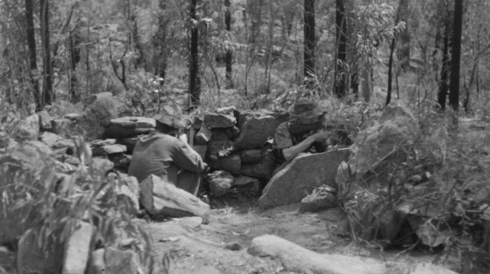
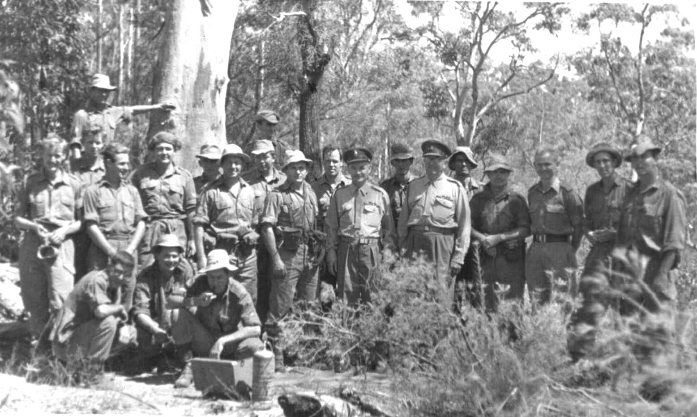
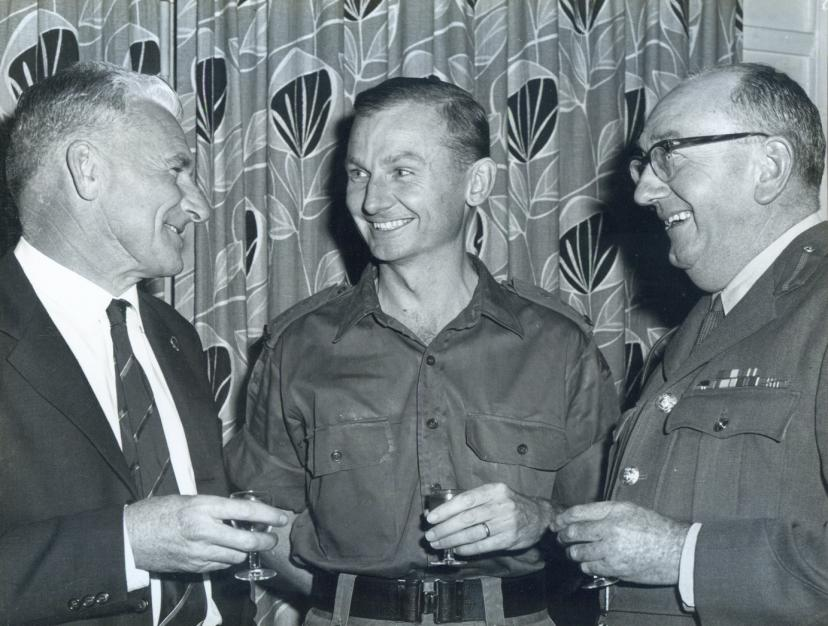
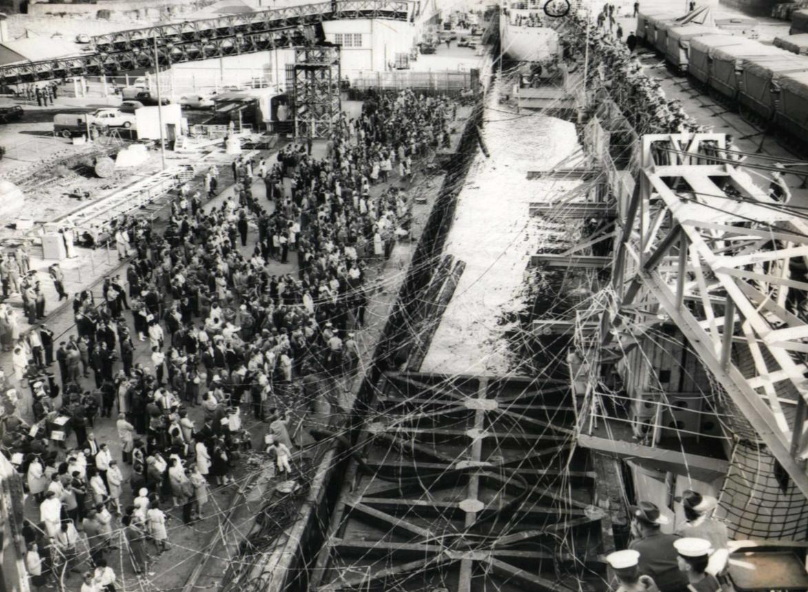
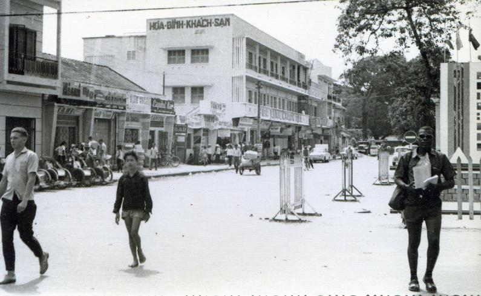
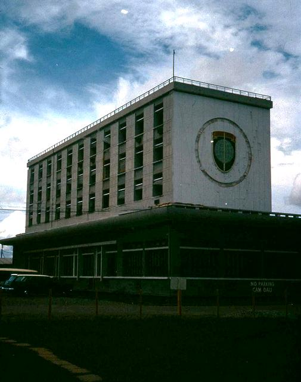
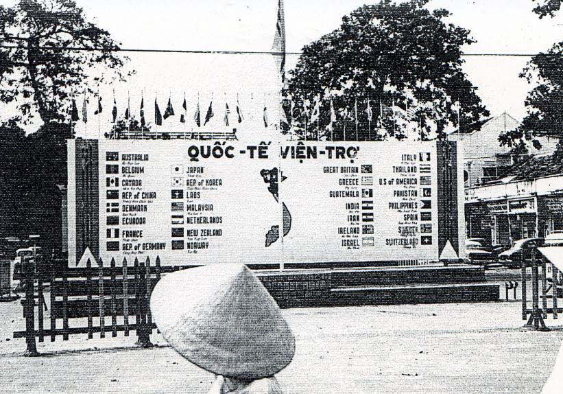
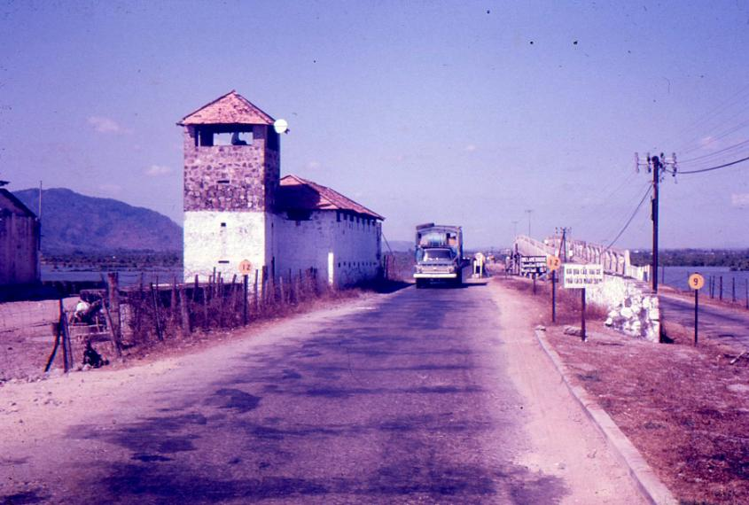
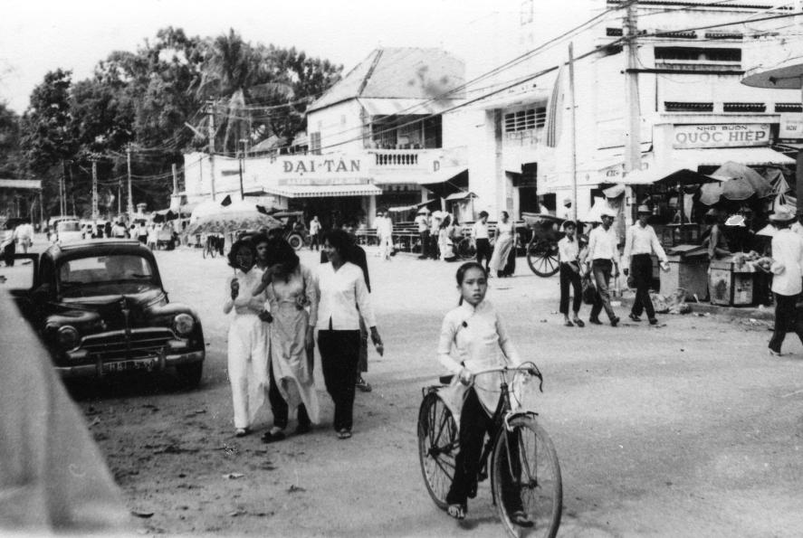
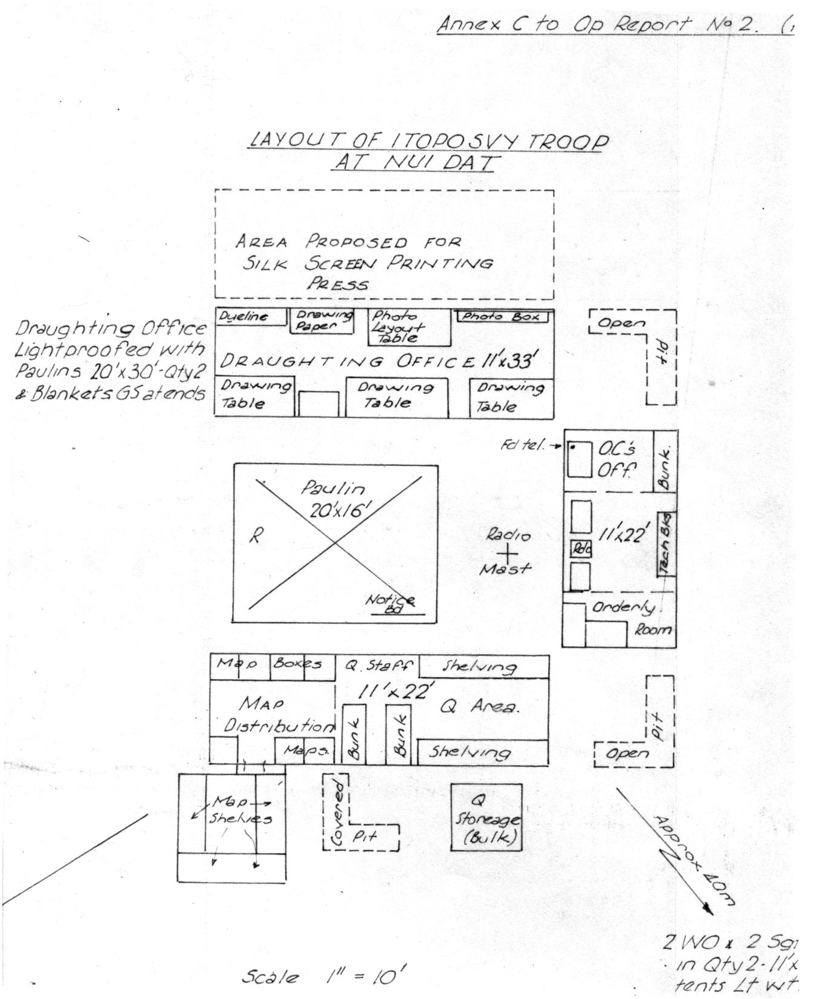

PROLOGUE and DEDICATION
It has taken me forty years to decide to commit my Vietnam story to paper. Why so long you may well ask. My only response to that is that I was getting on with my life post Vietnam, my family, my work and my community involvements. And yet those twelve months in Vietnam have always sat in the back of my mind and I doubt whether a day has passed when I haven’t reflected almost subconsciously on some incident great or small or person I came to know from that period of my life. My account is based upon several sources – my Commander’s Diary that was discontinued in August 1966 by direction from higher authority; my monthly operational reports to my Directorate and to Headquarters Army Force Vietnam, my date pad desk diary (unfortunately pages missing from mid March to mid May 1967) and various letters and documents included as annexes to this account.
Commander’s Diaries and monthly operational reports (without annexes) can be accessed through Internet on the Australian War Memorial data base. Also I made reference to and extracted from my own Army Journal article Operational Mapping and Surveys, South Vietnam 1966 to 1967 published in 1968 and to the official history of the Royal Australian Survey Corps Australia’s Military Mapmakers by Dr Chris Coulthard-Clark. Also I referred to other recent writings on the Vietnam conflict to confirm dates and some names.
Of course it would be a very dry account were it limited to simply extracts from those documented sources. My personal recollection of the people with whom I served in my own unit, the Detachment of the 1st Topographical Survey Troop and others with whom I had personal dealings on the Headquarters of the 1st Australian Task Force and a number of US headquarters and units remain as clear in my mind as they were on the day I departed Vietnam and form the ‘glue’ of my account. I clearly remember things that were said, comments made and the general ethos that prevailed within the Nui Dat base at that time. Lastly I remember also how I felt about many of the things that took place, my disappointments, frustrations and positive elations. In retrospect now I reflect on the remarkable effort of the sixteen soldiers with whom I served in the 1st Topographical Survey Troop who carried out their exacting role in incredibly trying and adverse conditions of climate and circumstance without complaint or criticism and achieved outstanding results.
Finally I reflect on the continuing encouragement given to me by my wife Wendy who with our one year old daughter endured the loneliness and frustrations of twelve months enforced separation living in a small army apartment in Sydney. Never at any time in our weekly, occasionally fortnightly, letter or voice tape communication transmitted through the hopelessly inept postal system did I hear a word of complaint or domestic concern yet knowing full well that there must have been many situations that may have warranted some off-loading on a distant husband.
I dedicate this account first to my wife Wendy and my eldest daughter Sarah Jane who didn’t know a father until she was twenty one months old when a strange man invaded her life.
And secondly I dedicate this same account to the band of men who served with me in Vietnam; the men of the Detachment 1st Topographical Survey Troop and whose names appear in the pages of this account.
MAP 1 – Frontispiece
1 ATF BASE AREA NUI DAT - EDITION 3
Original scale 1:5,000; Grid squares 1,000 metre

BRISBANE 1965
A quiet year
Perhaps Brisbane is where my personal Vietnam1 experience started. Northern Command Field Survey Unit located since 1963 in Damascus Barracks, Gaythorne had had a relatively quiet year catching up on survey computations and station records from previous years” field operations. Some relatively minor field work had kept small parties in the field for short periods of a few weeks.
Having had lengthy field deployments over the previous three years from my being commissioned in 1961 and married in that year, my OC Major J.L. (Jim) Stedman kindly gave me a year in base. It was, nevertheless, a busy year for the Unit with numerous small tasks to occupy it. One that comes to mind was the safety survey of the long established Enoggera Rifle Range and quite a number of rifle ranges throughout Queensland. The introduction of the SLR rifle with its high muzzle velocity and flat trajectory to replace the time honoured Lee Enfield .303 rifles required the safety template of all rifle ranges to be re-examined. At Enoggera, rounds fired from the 200 to 400 yard firing mounds were sailing over the butts and Enoggera Hill behind to knock tiles off the roofs of houses in the suburb of The Gap. On many country ranges the centreline of the firing range was not aligned with the centre line of the fan shaped land parcel allocated for rifle range use so hence firers were sending rounds out to one side or the other into cow paddocks or even the outskirts of a town. The surveys led to the closure of many ranges including the historical Enoggera Range.
On the home front Wendy and I had moved in to our finally allocated married quarter, a “Reilly- Neusen” pre-fab on the corner of Lloyd and Wardell Streets, Enoggera in 1963, only a short and convenient walk across the Enoggera Rifle Range to Northern Command Field Survey Unit. The 2nd Battalion of the Royal Australian Regiment (Pentropic) was on our back doorstep. At Christmas 1963 we acquired our small black poodle dog “Beau” – a dog with a personality. In August 1965 our daughter Sarah Jane was born.
If any evidence was needed to demonstrate that “war” was not in many Army minds in 1965 (Vietnam was someone else’s problem), at least in southern Queensland, I would put forward the Army Officer’s Ball, an annual event and in that year conducted at Brisbane’s iconic ballroom, Cloudland. Somehow I finished up as ball coordinating officer on the Ball Committee chaired by Lieutenant Colonel Baert of the Royal Australian Electrical and Mechanical Engineers. It was to be the ball to end all balls and I think that objective may have been achieved. It was to be many years after that before another ball was held; at least in Brisbane. It was certainly a grand occasion, one which Wendy being very pregnant couldn’t attend. Perhaps that was the reason I was appointed coordinating officer. The very nature of Cloudland perched atop a hill with very difficult access in the suburb of Hamilton caused the ball to become a major military operation. The dancing component of the ball was preceded by a four course sit-down dinner at long tables covered in black plastic with centre-piece decoration of .303 rifles and old boots AB black all spray painted gold. We entered the ball room through a manned weapon pit. The dinner was followed by military contra-marching by the Northern Command Band and then the ball commenced. A company of Pacific Island Regiment (PIR) soldiers had been detailed to do the hard work, erecting tables for the dinner and removing tables after the dinner and generally cleaning up after the ball was over. The very large rubber link mat at the entrance to Cloudland as well as a number of the gold painted .303 rifles disappeared that night (I was advised that the rifles had been rendered inoperative but the mat was valued at several hundred dollars). An anonymous tip-off a few days later allowed the missing articles to be recovered from the Brisbane River somewhere off the Bulimba RAEME Workshops much to Colonel Baert’s and the ball committee’s relief. I recount this tale as a comment on the very peace-time ethos of the Army that was about to throw itself into a war that was to last ten grinding years2.
Vietnam comes into focus
Although a relatively quiet year for Northern Command Field Survey Unit at Gaythorne, over the creek at Enoggera it was far from a quiet year. The 1st Battalion Royal Australian Regiment (1RAR) had mid year been deployed from Holsworthy, Sydney to South Vietnam and in 1965 the 2nd Battalion Royal Australian Regiment (2RAR), a very inflated Pentropic Battalion of five infantry companies under the command of a Colonel was divided into two light tropical battalions, one retaining the designator 2RAR and the other 6RAR. Intensive training activities were taking place preparing these two battalions for goodness knows what since there had been no suggestion at that stage of increasing the deployment to South Vietnam beyond a single battalion and the Australian Army Training Team (AATTV), which had been there since 1962.
I recall attending a general briefing given by a major from Holsworthy, the DAQMG (Deputy Assistant Quartermaster General – refer footnote 11 on P 19 Part 2) I suspect, on the logistics of deploying a battalion overseas at fairly short notice. It was interesting but I couldn’t see it being particularly relevant to my own somewhat comfortable military existence. It was to become so. The Australian Army had always been an expeditionary force in the British model with only limited civilian integration – a “get up and go as you are army” where men and to a limited extent women, carried out all of the internal administrative functions but all capable of picking up a rifle and assuming a combat role. Although no longer the case I believe that this was a great advantage, especially in the initial deployment of a stand-alone force.
Newspaper accounts of Viet Cong “atrocities” and tactical practice – the use of the dreaded “panji” that would penetrate an average military boot – their ability to strike and then melt away – their use of crudely made but massive “claymore” type mines triggered by a trip wire – became increasingly frequent and gradually the Australian Army adjusted its tactical training to accommodate these practices. Somewhere in the middle of the year and at about midday, we in Northern Command Field Survey Unit were disturbed by a loud explosion, sufficient to rattle our louvred windows, from across the creek at Enoggera. It was followed by quite a commotion of ambulance sirens and other noisy activity. We were to learn later of the appalling accident that had occurred. A claymore mine recently introduced into the Australian Army was accidentally triggered by two sergeants in 2RAR preparing for a lesson killing two and wounding others. Fortunately the students in the training squad were at lunch. It was reported in the press that the same device had been passed around a classroom of senior officers at Canungra a week before!
In my recollection the Australian public was never entirely at ease with our military deployment to Vietnam and public opposition to it started to develop with the re-introduction of National Service. The old National Service scheme of 6 months3 service for all males over the age of 18 years petered out in the early “60s but by 1963 it was becoming increasingly apparent that with overseas deployments to Malaya and for a short while to Borneo against Indonesian confrontation, further overseas deployments could not be sustained by voluntary recruiting. In 1965 a new national service scheme was introduced for males over the age of 20 years, a “selective” scheme based on a lottery, the period of service to be two years. Males were required to register for national service on their 20th birthday and their names went into a “hat” and then sufficient numbers drawn out randomly to satisfy the need. Deployment to South Vietnam was on everyone’s mind. The scheme was seen by many as fundamentally unfair but what else? It was a means to an end. Those selected seemed to accept their lot and active service had its advantages in “war service loan entitlements” and perhaps other prizes at the end of the mythical rainbow. Of course not all national servicemen would see active service, that is, service in a war zone. Many would relieve regular soldiers from Australian base duties such as vehicle drivers and general logistic jobs.
In federal parliament the Labor Party Opposition was out rightly opposed to a South Vietnam military involvement. Protest groups started to develop in the community, especially against selective national service. One that received a lot of attention called itself “Save our Sons” (SOS) and comprised women, mostly middle aged – mums it would seem – who were particularly vocal and frequently formed outside the entrance to army camps either in silent vigil or sometimes not so silent banging saucepans and tin cans to draw attention to their cause. The government branded them “communist fellow travellers” and from time to time it was claimed that active communists had infiltrated them. Perhaps they had.
It’s all about promotion
Well, that was the background picture, but how was that to affect me? In late 1964 it was noticed that one Lieutenant Skitch had had sufficient time in Northern Command Field Survey Unit to find his commissioned feet and it was time for a posting. The Survey Corps had just created a GSO 3 (captain) appointment in Port Moresby, a suitable position for a career conscious newly promoted temporary captain and Skitch was duly notified. An exciting prospect indeed but married quarters in Port Moresby were as scarce as hen’s teeth and the only source of private hirings was expatriate public service homes when the occupants in taking long periods of leave in Australia charged exorbitant rents which the Army wouldn’t subsidise. On being confronted with that fact our Corps Director agreed that it was clearly a single man’s posting and Lieutenant Noel Sproles was appointed. I think I gave a sigh of disappointed relief and settled back to life in Northern Command Field Survey Unit and my very comfortable (and cheap) married quarter on the corner of Wardell and Lloyd Streets, Enoggera, with its pleasant walk across the rifle range to work. The birth of our first child Sarah Jane in August 1964 consolidated my wish to stay put. But not for long!
Loan back & shadow posted
The Australian Army liked to boast that its active strength was a whole division and as well as that, a reserve division. I can’t comment on the latter, but many support units of the regular Army Division were manned by soldiers “loaned back” from the logistic units of the Australian Support Area (ASA). (The Army was divided into three main components, the Field Force (FF), the Logistic Support Force (LSF) and the ASA) These “loan back” personnel were actually on the active strength of the FF unit but loaned back to an ASA unit. The FF unit had first call on their service. The other “three card trick” in manning was to “shadow post” personnel from an ASA unit to the FF unit. In that case the parent ASA unit had first call on their service. Survey Corps had a so-called shadow posted unit – the 1st Topographical Survey Squadron Detachment of two officers and 18 other ranks based on the AHQ Survey Regiment in Bendigo. This unit was commanded by Captain EP (Peter) Constantine. Later the command of the Detachment transferred to Captain Keith Todd of the Eastern Command Field Survey Unit based at Randwick in Sydney. One officer and other rank personnel remained at Bendigo. It was, ostensibly, a FF unit and as such all personnel had to be Draft Priority 1 (DP1), “fit for service everywhere” (FE). It was really a paper unit although its personnel serving with the Regiment in Bendigo were given special attention in military training (so I was told).
‘Survey’ in a theatre of war
In the application of “Survey” in a theatre of war it was conventional wisdom that a survey company or squadron would be on the order of battle (orbat) of an army corps, that is a combination of three divisions. This had been the case in World War 2 (WW) and was certainly the case with the British and US armies. Thus it could be reasoned that a single division might be supported by a Survey Troop, roughly a third of a squadron, and below that, a Survey Section might support a brigade or brigade strength Task Force. In 1965 the concept of the shadow posted survey squadron was abandoned and instead a topographical survey troop would be raised on the order of battle of the 1st Division. This was to take place in late 1965.
I win the prize – a unit without soldiers!
It was late September 1965 when my OC, Major Jim Stedman called me into his office on a Friday afternoon and advised me that a posting order was on its way appointing me as Officer Commanding the 1st Topographical Survey Troop to be raised at Randwick NSW. This time there was to be no procrastination about the availability of married quarters. I was to take the posting and take it I did. Soon after, maybe the following Monday, I had a longish phone call from Colonel Don Macdonald, the Survey Corps Director (Head of Corps) extolling the posting. It was to be my career break-through. Indeed it was and I needed no persuasion. Wendy understood the situation and possibly read the immediate future a little more clearly than I did. Vietnam had not been mentioned and it was to be some months afterwards that further deployments to that place were announced.
We had become very comfortable in Brisbane. Wendy had many old friends, some from her nursing days and some from her home-town of Tenterfield. Sarah Jane was two months old and we were well settled in our married quarter at Enoggera. Nevertheless, Sydney was where we were married and much of Wendy’s family were resident in Sydney. Interstate travel at that time was mostly by train and on 24 October I entrained at South Brisbane on the Brisbane Limited express to Sydney. The Army provided me with a 1st class sleeper so the overnight trip was anything but arduous, however, being a light sleeper at most times I had many hours to contemplate the immediate future.
In Survey Corps precedence I was moving into an independent command role at both an early career stage (four years commissioned from the rank of temporary sergeant and substantive in my rank only since July ”65 – the Corps” most junior captain) and at a relatively young age for Survey (31 years). The role of the proposed Troop was not clearly defined and exciting as the prospect of an independent command was, the somewhat nebulous nature of the unit – loan-back personnel – could be disappointing and frustrating. Nevertheless, three officers and 39 other ranks was a sizeable unit and loan back or not it was a challenge. I had had previous field OIC roles – in north Queensland in 1962 and at St George in 1964 but these were largely under the watchful eye of a well experienced and senior Major OC, albeit, many miles distant in Brisbane. I had certainly led smaller parties in the field as an NCO before I was commissioned, but this was different. I have never been over-endowed with self-confidence and many times in the past had had to really screw myself down to take the initiative of a lead role. The fact that I had never suffered a major failure in any previous undertaking and in a few instances was markedly successful, was of help. All of this rattled through my mind on the very un-easy overnight trip to Sydney. Also of course I had to make the appropriate arrangements for my family to move forward. This meant finding a married quarter and in Sydney these tended to be a long way out of town.
The Survey Corps since WW had been deployed exclusively on mapping and geodetic operations on the Australian mainland and in New Guinea, essentially a peace-time activity directed to infrastructure development and aid to our colonial territory. While defence of sovereignty was always an underlying rationale for the Corps” commitment to such tasks, it was often not identified up front. The Corps had not seen active deployment in a hostile theatre since WW. The Director of Military Survey, Colonel D Macdonald was of the view that the re-inclusion of Survey Corps in the order of battle of Australia’s notional front line divisions would go a long way in consolidating the Corps” continuing existence. That he managed to achieve this in the face of opposing influences in Army Headquarters says a great deal for the general respect he commanded in the higher echelons. The following extract from Coulthard- Clark’s Corps history reflects this:
By mid 1962 Macdonald had found fresh cause for concern in the further omission from Plan Hammerhead (deployment of a battle group, or task force, to South-East Asia) of any survey units. He argued that such a contingency required at least a Survey Section of thirty-five all ranks, forming part of the Logistic Support Force considered as necessary to maintain a formation of this size in the field, and proposed that this would, in fact, be part of the Army Topographic Survey Squadron detachment already approved in planning. Again the advice of the Director of Survey was accepted, with the result that in December 1962 authority was given to raise what was termed a detachment of 1 Topographic Survey Squadron with an initial strength of twenty personnel. This action was purely on paper, or notional, since the personnel (not being required until mobilisation) were 'loaned back' for use elsewhere within the Survey Corps’ peacetime structure. In mid 1964 Macdonald took the step of asking for similar provision to be made for the additional fifteen positions originally bid for.
A year later, with organisational planning for a new air-portable division under way, Macdonald made some further adjustments to the sort of survey component that was seen as necessary at this level. Instead of portion of an army squadron or a corps company, he considered that a platoon-size element – or divisional troop – would be required. In July 1965, therefore, he put the case for disbanding the existing unit, Det 1 Topo Svy Sqn, and replacing it with a new one, the 1st Topographical Survey Troop of three officers and thirty-nine other ranks, which would form an integral part of the Regular Army's principal formation, the 1st Division. The intention was to raise later two more such troops, as CMF units, to support the mainly militia 2nd and 3rd Divisions.
The new unit was to contain field survey, drawing, and printing components, along with an administrative element, and was to be capable of splitting into two self-contained sections, each able to provide support to an individual brigade or task force. It would be located at Randwick, in Sydney, and co-located with Eastern Command Field Survey Unit; all, except the ten reproduction and drafting personnel, who were to normally work with the Survey Regiment at Bendigo and join the troop only for training and exercises. When not required for such training, the troop would be employed alongside the Eastern Command Unit and help to further its program. In recognition of this assistance the Eastern Command Unit was to be cut in strength to fifteen less than the three equivalent units. Military Board approval for this scheme was obtained, and the troop was formally raised on 25 October 1965 with Captain RF Skitch as its first OC.
SYDNEY 1965
An inauspicious arrival
The train entered the northern outskirts of Sydney about 7.00am on the 25 October on a grey morning. Peering through windows at the stations flashing past – Hornsby, Pymble, southwards to Central I could see Sydney schoolboys on platforms in their quaint English style uniforms and caps; workers, some in suits, some in factory clothes; this was Sydney. It looked grey and foreign. I was less than impressed. It was easy to sink into a mood of despondency – hardly appropriate for an army captain about to assume command of his first unit. Finally arriving at the confusion of Sydney Central with its complexity of platforms I sought out the Army Transport Officer (ATO) office where a young Survey Corps soldier was waiting to take me to Randwick. Greatly heartened by the fact that I was expected and the young fellow seemed pleased to see me, my spirits revived. I think it may have been our allocated corporal clerk whom I now know in a very different walk of life and who at that time was to become a very supportive and helpful soldier in all that was to follow.
Randwick
Eastern Command Field Survey Unit was to be the Troop’s fostering unit. It occupied a World War 1 (or maybe Colonial Army) building of solid red brick with wide verandas on two sides. It may have been a home at one time; the layout of rooms within better suited a residence than a functional office. A plaque on the exterior wall stating it was once the School of Musketry suggested its colonial origin.
The sprawling military complex at Randwick was a mixture of weatherboard and fibro buildings with some more substantial brick buildings probably of 1930s vintage, certainly pre WW. I recall the officer’s mess being of the brick variety and very well established. As well as the old building which housed the unit’s HQ, orderly room and computing and records section, Eastern Command Field Survey Unit occupied a couple of the fibro buildings for compilation draughting and recreation. Engineers, Signals and Service Corps units predominated, the latter being mainly transport with sheds down the back for transport and field operation mounting. Major Mal Bythe, an engineer, was the officer’s mess president and Lieutenant Colonel Jim Lamborn the nominal CO, both of whom I would come to know in later years.
A row of well-built new (some still under construction) married quarters fronted the entrance road to the complex one of which was later allocated to Major Bob Hammett, OC of E Comd Fd Svy Unit and Deputy Assistant Director of Survey (DAD Survey) Eastern Command. In the latter role Major Hammett occupied an office in Victoria Barracks, Paddington, with a staff of three or four which, apart from a civilian female typist, were culled from the field survey unit.
Arriving at Randwick I was greeted by Captain Keith Todd, in effect my predecessor who since 1964 had been OC of the shadow unit 1st Topographical Survey Squadron (Detachment) which would cease to exist on the raising of the Troop. Captain Todd had acted as a sort of 2IC to Major Hammett sharing that responsibility with Captain Ted Laker in looking after the Survey Unit while Major Hammett attended to more esoteric duties as DAD Survey at Victoria Barracks. Keith Todd was about to be promoted to Major on the “supernumerary list” in order to attend Staff College the following year and I saw very little of him. Keith and his family had been allocated a married quarter in the Sydney suburb of Kingsgrove but his stay in Sydney was relatively short even by army standards.. Major Hammett also had an office in the Survey HQ building and most mornings spent half to one hour in his OC role before being driven into Victoria Barracks. He was a genial fellow and well liked by the soldiers, although certainly not a “hands on” OC. From what I recall the twenty personnel previously shadow posted to the now defunct 1st Topographical Survey Squadron (Detachment) automatically transferred to 1 Topographical Survey Troop and the deficit of twenty two was to be made up from the strength of Eastern Command Field Survey Unit but “loaned back” to that unit. I was never particularly clear at which point a proposed new unit is said to be “raised” even given that my first task was to “raise” the Unit. I presume that some level of promulgation occurred, maybe in an official gazette of some sort and this must have happened soon after my arrival in Sydney.
Settling in
On that first day in Sydney, having done the rounds and met senior staff I was driven in to Victoria Barracks to meet Major Hammett. I was greeted with his usual bluff greeting – “Welcome Bob – sit ye down”! His interest was very much directed to my domestic circumstances – when my family would be able to join me, availability of married quarters with little comment on my forthcoming role. Major Hammett took me to lunch in the august Victoria Barracks Officer’s Mess and invited me to tea that night in his home where I met his very hospitable wife Jean and daughter Wendy. It was of concern to me that the waiting time for married quarters was said to be six months and most of these were far out in the large military bases at Holsworthy in Sydney’s west. In married quarter allocation ninety minutes travelling time to work was not to be considered unreasonable. Temporary accommodation, a furnished private hiring, was the alternative and a temporary accommodation allowance could be applied for. Rental accommodation in Sydney even at that time was very expensive. Conditions governing the movement of families on posting were very restrictive and lacked logic. It was not uncommon for families to be left in married quarters at the members “old station” for three to six months. Major Hammett was generous in helping me find temporary accommodation, sometimes driving me considerable distances around Sydney’s congested roads in his private car looking at possibilities. It was not my first meeting with Major Bob Hammett. In my time as a corporal at the Survey Regiment from 1957 to 1961 Major Hammett held the appointment of OC Cartographic Squadron. I don’t think we had rubbed shoulders during the intervening period. Although treating his current appointment as something of a pre-retirement sinecure Major Hammett had distinguished himself during WW in the Middle East as an NCO. He was to die in office three years later.
Eastern Command Field Survey Unit at that time operated differently from the other State based field survey units and the Topographic Squadron of the AHQ Survey Regiment all of which deployed on a seasonal basis for lengthy periods in northern Australia and New Guinea. Eastern Command Field Survey Unit worked out of Randwick in small parties for relatively short durations generally staying in motels on travelling allowance, a situation viewed with some envy but also disdain by members of other field units. I must confess that I brought with me that same somewhat biased attitude and rather unfairly saw the members of Eastern Command Field Survey Unit in that light. However, at that time I had no identifiable command responsibility as far as my own soldiers were concerned since they were all “loaned back” to their originating unit. Nevertheless I was responsible to ensure that they met the standards and requirements of “draft priority 1” and most did not due to no fault of their own. I was dismayed also to find that the “liquid lunch” seemed to be accepted as normal for most senior NCOs and warrant officers.
I developed a warm relationship with Captain Ted Laker who was never less than helpful on all matters pertaining to the embryonic Troop. He gave me valuable advice on the loan-back personnel that I found to be totally reliable. His generous personality made my early weeks at Randwick very agreeable. Ted had been in Survey Corps from early WW days, had seen active service in New Guinea and then on numerous mapping projects in Australia rising through the ranks to Warrant Officer Class 1 and then “Q” commissioned. He had always managed to maintain his family in Sydney regardless of where he served, a choice chosen by many soldiers following a military career. Ted was later honoured as a Member of the Order of the British Empire (MBE).
Defend Australia – Forward Defence – contingency plans
In the early 1960s Australian defence was predicated on the concept of “forward defence” – we would defend our continent and our interests away from our own coastline. Nevertheless, our “expeditionary” army even with the national service supplement was quite small and its resources had to be carefully husbanded. This gave rise to a series of contingency plans – carefully thought out deployment plans to meet a number of defence possibilities abroad – possible theatres and levels of intensity. The enemy in all cases was communism in all its forms and variations. We believed in the “domino theory” – that in South East Asia if one country fell to communism the rest would follow like dominos until we would be fighting on our own shores. The theory was supported by a number of post WW military events. There was Korea in the late 1940s and still lingering on in a precarious truce; red China with its immense military capacity; the Malayan emergency, fighting communist insurgents; Indonesia being belligerent under its President Sukarno with his decided communist sympathies and finally the present “threat” – Vietnam. Forward defence was coupled to support of our great ally and friend, the United States of America and our participation in the ANZUS pact and SEATO (South East Asian Treaty Organisation), a shadow form of the massive North Atlantic Treaty Organisation (NATO). The domino theory, support of our great and illustrious friend, pacts to give us eternal protection? At least it helped justify all that was to follow.
As the officer commanding a draft priority 1 Field Force unit I was given a high-level security classification (access to “top secret”) and with that access to the drawer of contingency plans. They were in considerable detail; there must have been a substantial staff somewhere constantly working on them. They detailed orders of battle (orbats) for each contingency, scalings of weapons and equipment, vehicles, methods of transportation to the projected theatre and much more. I noted that my Troop (embryonic as it was) was shown on the contingency plan for Thailand, New Guinea and Indonesia (I think). But there was no mention of Vietnam! There seemed to be no plan for Vietnam although we already had a battalion serving there. So much for contingency plans!
1st Topographical Survey Troop - Establishment
The office allocated to me was a fibro tack-on at the back of the main building coming off the side veranda; small but with sufficient filing cabinets and an adequate desk. I wondered whether that was to be my lot for the ensuing two or three years, the usual length of time for an average posting. I busied myself with preparing dossiers on each of my posted but loaned back soldiers, mainly to determine and be aware of their draft priority status. This concerned not only those loaned back to Eastern Command Field Survey Unit but also those now loaned back to the Regiment in Bendigo, mainly draughting and print personnel. There were many gaps; some failed to make it on medical grounds and probably never would and others simply because their administrative paper work was not up to scratch. Some were within months of the completion of an engagement with the chances of them re-engaging somewhat remote. It was fairly apparent also that most of the affected (or even not affected) senior NCOs and warrant officers were treating the whole idea with less than seriousness.
The Troop’s establishment4 provided for three officers. Apart from myself the other two were Captain Jerzy (George) Gruszka at the Regiment and Lieutenant Keith McCloy, about to graduate from the University of NSW with a degree in surveying. I knew George Gruszka very well. We had both Corps enlisted in Western Australia at about the same time and went through recruit training together. We were both on the same basic survey course at the School of (Military) Survey at Balcombe in 1955/56, a course that I duxed and George was second, both with “B” passes. George was Polish and had spent his early years during WW in internment camps in Poland (his father was a Polish officer and fought the Germans until Poland capitulated) and after the war were sent to further internment camps in Siberia. Somehow his family stayed together and through circumstances I never fully knew finished up in South Africa and finally Perth, Western Australia. We had been the best of friends but our friendship drifted when George was posted to Western Command after Basic Course and I was posted to Northern Command. From the rank of sergeant George had been field commissioned (a rare happening) a little after my own “knife and fork” commission.
My second officer Lieutenant Keith McCloy was totally inexperienced in Survey having had only short field trips with Eastern Command Field Survey Unit during university holiday breaks. He was an RMC graduate and I never really warmed to him for reasons I would prefer not to enumerate.
Settling the family
I was anxious to bring my family forward to Sydney as soon as possible and intensified my search for suitable temporary accommodation, which might turn out to be not so temporary. Wendy’s uncle, Woodrow Weight, ran the family real estate business at Dee Wy on the North Shore. Weight & Co was well known and respected in the real estate business and Uncle Woodrow was President of the Real Estate Institute. To rent in Sydney at that time one had to enter a contract for a set period, at least six months, more frequently twelve. Should one need to leave the premises short of the agreed period one could be held liable to keep paying rent until the agent found a new suitable tenant. The Army applied further pressure by refusing to pay rental assistance unless the contract contained a release clause allowing the lessee to leave the premises to take a married quarter offered according to the exigencies of the service. Uncle Woodrow provided me with a letter of introduction to a Coogee agent, which seemed to work. I was offered a first floor flat in an older building in Mount Street, Coogee that was the best I had seen so far and took it. It was as clean as one could expect and the furnishing was old but comfortable, worn, but not worn out. I had an entitlement to return to Brisbane to arrange a removal; essential items and clothing to Sydney and the remainder into storage. It all happened and we three and Beau our Poodle dog were reasonably comfortably ensconced into our Mount Street flat.
The flat below ours was occupied by an elderly lady, a Mrs Greenway whose son had served in the Middle East as an officer and later lost his life in New Guinea. It was a sad story of a mother losing her son in war. We talked from time to time on the landing and on one occasion just before leaving our Mount Street flat she presented me with her son’s “swagger” cane, apparently issued to all AIF officers at the time. It is leather covered and polishes beautifully. It is now one of my treasured possessions.
Mount Street Coogee was cosmopolitan, as was most of Coogee along Coogee Bay Road from Mount Street to the Esplanade. It was an interesting area in which to live. We did so for only a short time because out of the blue, most unexpectedly we were offered a quarter – a two bedroom unit in a Sydney six pack at 2 Barry Street, Clovelly, not far from our Mount Street address. Some weeks later we were a little surprised to read in the newspaper that the notorious criminals Ryan and Walker who had killed a prison guard in their escape from Melbourne’s Pentridge Gaol had been holed up for six weeks in a Mount Street flat a few doors from where we had lived. Ryan was subsequently executed by hanging, the last person to suffer capital punishment in Australia.
A shadow-posted – loaned back Troop
My work at Randwick continued – paper work in the main. I can’t remember a great deal about the detail but much of it involved Q accounting – setting up a Field Force abbreviated Q Account that ultimately proved a disaster, less so for my own unit but more so for the Task Force as a whole. Confidential reports were required on all personnel, an exercise where I was totally dependent on the assessment of other people and in retrospect I was guilty of doing less than justice to some.
I felt that I needed to bring the whole of the Troop together for a period of military training conducted by the experts if we were to properly integrate into a higher formation. To this end I had preliminary discussions with the GSO 2 Operations at 1st Task Force at Holsworthy and received a very positive response. Two Infantry warrant officers were assigned to the task of developing a training program, WO25 Ray Harms from the Task Force HQ and WO Don Watts from 5RAR both of whom undertook the assignment with some relish. The period of training to bring the Troop to Draft Priority 1 standard was to be four weeks and this would also meet the Subject A (weapons and drill) promotion requirement for some of our sappers and corporals. Initial discussions took place in December and the period of training was to take place at Holsworthy in the second week of February. Of course I had to get clearance from the Director of Military Survey, Colonel Macdonald and Field Force Command, the latter since they had to meet the bill for the movement of the Bendigo personnel to Sydney and the payment of associated allowances. Colonel Macdonald gave the proposal his full support and the Regiment was directed to release their members. It was all “go” from that moment. But it was nigh on Christmas and it was important that members clear as much of their leave entitlements as possible so we went into a virtual shut down till late January.
FEBRUARY 1966
Military training at Old Holsworthy
By late January the Troop was at two thirds strength; sufficient to initiate our training program. I am not clear now why we could not reach full strength; we certainly had it on paper. It suited the convenience of the Task Force HQ and its own training program to see our month of training through as early in the year as possible. Eighteen months before, the pentropic battalion 1RAR had split into two light tropical battalions (air portable), 5RAR and 1RAR. The latter had deployed to Bien Hoa, South Vietnam under the command of Lieutenant Colonel Lew Brumfield with the principal role of airfield protection. In this role the battalion had been structured into the US 173rd Airborne Brigade. Airfield protection involved screen patrolling and in undertaking this task 1RAR incurred Australia’s first casualties of the Vietnam War. Lieutenant Colonel Brumfield had been medevaced back to Australia suffering from an injury he incurred on the sporting field of Duntroon and his 2IC Major Preece assumed command with field promotion to Lieutenant Colonel. Lieutenant Colonel Brumfield on promotion to Colonel became Commander of 1 TF6. 5RAR commanded by Lieutenant Colonel John Warr was preparing to replace 1RAR in South Vietnam.
On 7 February our troop moved into barrack accommodation at Old Holsworthy, officers and warrant officers and senior NCOs into old huts and sappers and corporals into tents. We were fostered by the TF HQ. I had come to know most of the TF HQ officers and staff in December and over the following few weeks and the Q staff who in the tradition of Q staff generally seemed a fairly ordinary lot. The first week was taken up erecting tents and generally making the area habitable again – it hadn’t been used for quite some time.
I should point out that in mid February there had been no announcement of a significant build-up of our battalion group already deployed in Vietnam other than providing some additional elements to the existing group. Neither had 5RAR been formally warned to replace 1RAR although it seemed obvious that they would. The TF HQ at Holsworthy had not received any formal advice that it would be deployed although most worked on the assumption that it was a distinct possibility. And, of course, the likelihood of Survey being involved in any force build-up seemed even more remote, at least to us on the ground.
We moved into a training routine the following Monday; up early, PT before breakfast and a good deal of physical activity throughout the day. We concentrated on weapons and field craft, the weapons being those allocated to the Troop on its Q Series table. They included 9mm Browning pistols for officers and warrant officers (a useless weapon), 9mm Owen Machine Carbines (OMC), the 7.62mm self loading rifle (SLR) and its bi-poded automatic version the AR and, for whatever reason three anti- tank recoilless rifles (RLR). We fired all these on the Holsworthy range including the RLR that fired a small rocket projectile which we were told cost $100.00 each at an old tank a couple of hundred metres down the range. We were allocated two projectiles each, one to get used to the weapon and the other to hopefully hit the tank. Some did but others missed and the projectile went sailing many more hundreds of metres down the range and into the bush. Our soldiers acquitted themselves very well on the range somewhat to the surprise of WO Harms; especially WO Dave Christie who had previously qualified as a marksman. The old OMC impressed me as a very good personal weapon and some months later I was to carry one at all times in preference to the Browning pistol.
Assisting our two warrant officer directing staff was Sergeant Arthur Falk MM. I think he must have earned his Military Medal during the Malayan Emergency or maybe Indonesian Confrontation. I was told that his MM was the main reason he held the rank of sergeant having been broken back to corporal and even private a number of times for unspoken crimes. One day Sergeant Falk was taking us for a fitness run in full gear in the late afternoon when we suddenly heard that unmistakable ps-zing ps-zing uncomfortably close to our heads. We had somehow blundered onto a road behind the rather low butts of the rifle firing range. We immediately assumed the posture of a troop of goannas and made our way at a fast pace back from whence we came. Nevertheless, Sgt Falk was a pretty good digger and saw us through much of our field craft.
Field craft covered bivouacking, defence and withdrawal, ambushing, patrolling, convoy procedure including being caught in an enemy ambush, all of which came under the heading of minor infantry tactics at platoon level. We may even have practised attack procedure although that wasn’t on our must-do list. I had had some exposure to platoon level tactics on my previous qualifying courses but for most of our fellows it was new territory. I recall one ambush position we took up at dusk in the bush at the back of Old Holsworthy to be attacked by hordes of mosquitoes. I don’t think I have ever experienced mosquitoes so voracious and in such numbers before or since. Finally our directing staff (DS) decided enough was enough and the exercise was terminated about 10.00pm. We also practised being at the other end of an ambush, both in vehicles on a road and on foot patrol. The army “pam” requires the ambushed personnel to charge firing into the direction of the ambush perpetrators; it takes guts to do that!
In our final week we bivouacked as a platoon in a defensive position at a bush site west of Holsworthy called Broken Bridge. Here we located weapon pits with arcs of fire, killing grounds, platoon headquarters, communication lines and all the appurtenances of a fully defended site. We sent out screen patrols, stood to at daybreak and dusk, ate from one man ration packs and cooked on hexamine stoves. The DS and a few soldiers from the TF HQ Company acted as enemy, keeping us awake at night. On the final morning we executed a tactical withdrawal followed by a forced march back to Old Holsworthy.

There was little left to do in the old camp. I paid my respects to the staff that had supported us and we returned to Randwick mid morning. Wendy by pre-arrangement was waiting to take me home. George Gruszka accompanied us since his plane for Melbourne and then to Bendigo was not due to depart until late afternoon.
MARCH 1966
Vietnam – on the cards!
Near the end of our exercise our “war” was temporarily called off for a visit to Broken Bridge by the Director of Military Survey Colonel Don Macdonald and Major Bob Hammett. We managed to produce some sort of morning tea and a group photo was taken. Following this I accompanied Colonel Macdonald back to Holsworthy to meet with the Task Force Commander Colonel Lew Brumfield. Although no mention had been made at Broken Bridge of a Vietnam commitment it became clear that preparations were underway for a force build-up beyond the single 1RAR battalion group already committed and soon to be replaced by 5RAR from Holsworthy. It had certainly been an increasing personal conviction of mine that some part of the Troop would be included in any force build-up for deployment to Vietnam and that was the substance of the discussion between Colonels Brumfield and Macdonald. Following this I returned to Broken Bridge. Vietnam was very much in my mind. The new Prime Minister, Harold Holt on 8 March, his first day in Parliament, made the announcement that a task force would be deployed to Vietnam. The public announcement of the deployment of the task force, to be designated the 1st Australian Task Force, was made on the ABC evening news that night. The designated area of responsibility was stated as Phuoc Tuy Province. A young Ross Symonds was the news reader and he must have looked at his script (in 1966 newsreaders did not have electronic screen prompts) and hesitated at the pronunciation. Finally it came out – Fuck Twee! He immediately looked embarrassed even on black and white TV but carried on. We learned to pronounce the name Fook (like book) Tuy. It was not clear at that moment whether the Troop or a detachment of it would be included. The task force strength (including a logistic support group) was not to exceed 5,000 and of course priority had to be given to arms units – Infantry, Armour, Engineers and Artillery. There also had to be logistic support – Supply and Transport, Ordnance, Construction Engineers and Medical and of course the usual cooks and bottle washers. Survey?? – perhaps not.

We are going!
It was to be some days later that I received advice that a detachment of the Troop would accompany the task force, not as a logistic unit but as an integral part of 1ATF to be co-located with the headquarters. Major Hammett requested my presence at Victoria Barracks. I went straight in from Randwick. It was mid afternoon and raining after a Sydney southerly buster had hit and the skies were heavily overcast but the main squall had passed. It was hot and humid in Major Hammett’s office and I had little doubt as to what he was about to tell me. Colonel Macdonald had phoned just after lunch to confirm that a detachment of the Troop comprising one officer and sixteen other ranks was to be deployed with the Task Force. I immediately told Major Hammett that I should be that officer. Lieutenant Keith McCloy had made his wishes known to me that were there to be such a deployment he should be the officer in charge. I had little faith in the man. He was quite immature and over confident. Major Hammett then phoned Colonel Buckland and told him that I had volunteered to lead the Detachment. I gathered that there was some relief expressed from the other end of the line.
Despite the foregoing I became aware that some doubt continued to exist over the inclusion of the Troop in the Task Force and that numbers were continuing to be debated in AHQ. The background to this and to the raising of the Troop is well covered in Coulthard-Clark’s history and it is appropriate to include an extract at this point:
Inclusion of a survey component to the task force headquarters was not a course taken readily by the Army. In fact, Colonel Macdonald (then Director of Survey) recalls having a tough fight on his hands during 1965 when he first proposed including the troop in any such deployment: 'My proposal was knocked back by General Wilton [the CGS], who said that perhaps a detachment half that size might be considered. But then he went up to Vietnam and when he came back he told me that he'd decided that we wouldn't have Survey there at all. So I went along to Major-General Charles Long [the Deputy CGS] and told him the story, and he asked how I felt about it. I said I was pretty firmly convinced that if we could get a det on to a task force that it would do a very useful job. So he said, "We'll have another crack at it." He supported me, and finally we got a decision for a detachment to go in’.
Some vacillation seemed to continue at AHQ and even re-emerged later in Vietnam.
Returning to Randwick from Major Hammett’s Victoria Barracks office I felt more than a little oppressed at what lay ahead, oppressed and yet excited. From those who undertook the Holsworthy training it was my task to select detachment personnel for service in Vietnam. Existing rank structure pre-determined the selection of some and although the Detachment as such had no established rank structure I needed experienced personnel and a balance of ranks. Apart from the four week period of arms training at Holsworthy there were only a few of whom I had personal knowledge of their technical skills. I had no choice but to have faith in the training they had received at the School of Military Survey reflected in their trade classification and worn rank. DAD Survey Eastern Command had little knowledge of the individual soldiers of the Eastern Command Field Survey Unit to which most of the allocated Troop personnel had been “loaned back”. As stated before, Major Hammett was a “hands-off OC”. I turned to Captain Ted Laker for advice. Ted was cautious in the advice he gave and it probably only influenced me in one or two cases. A further restriction was the unfortunate fact that not all those who undertook the Holsworthy training were medically classified FE (fit for service everywhere). For some that was simply because they could not pass their annual physical efficiency (PE) test and therefore had the medical classification of CommZ (fit for service in the communication zone). At that point I started to wonder why on earth they had been posted to the strength of a now Field Force unit. For them the Holsworthy training was a waste of time, certainly from my perspective.
I still had the task of telling Wendy and on returning home I did so. I guess Wendy expected the news and may have been a little more realistic about the prospect than me. Nevertheless, it was not exactly a joyous moment and the thought of not seeing my little daughter for twelve months was a further unhappy circumstance. It was clear also that my time during the following weeks leading to our eventual departure would be busy in the extreme.
Who will go? – Who will stay?
Apart from advising the Troop personnel that a detachment of one officer and sixteen other ranks would form the Detachment for Vietnam, I needed more time to reflect on whom to select. The non- technical personnel; the cook who was yet to be identified, the two storemen (maps and technical stores), and the batman/driver were locked in, allocated from elsewhere – no choice. I was assured all were or would be, FE. Why a cook one might ask. It was to be the Detachment’s contribution to the 1ATF kitchen. The orderly room clerk, a corporal, belonged to Major Hammett’s office spending half his time in Victoria Barracks and half at Randwick. He had trained at Holsworthy and was FE. My 2IC was to be a warrant officer class one. The WO1 from Eastern Command Field Survey Unit who trained with us at Holsworthy was not FE and never could be. A warrant officer replacement was allocated from Queensland – guaranteed FE. That left ten technical personnel to be identified. Many in Survey Corps had opted for Survey, not because of, but with the understandable belief that the likelihood of them being deployed to an active theatre of war was unlikely in the extreme. But of course, those selected accepted their lot with total outward equanimity.
It was late afternoon on a Friday that I assembled all remaining Troop personnel in the recreation room and after giving a carefully prepared preamble read out the short list of those who were to be assigned to the Detachment for service in Vietnam. Thinking back on this signal event I can still feel the tension in that room. Perhaps some were relieved not to be included and others disappointed. Perhaps some who were selected had misgivings, especially the married members. They had the weekend to tell their wives. The ten technical personnel selected were: WO David Christie Sergeant SR (Stan) Campbell Sergeant TD (Dave) King Corporal JL (Jim) Roberts Corporal Dennis Duquemin Corporal DGP (Des) Ceruti Sapper DEJ (Derek) Chambers Sapper BW (Brian) Firns Sapper Joe O’Connor Sapper RB (Ron) Smith (National Serviceman)
Other RA Survey personnel allocated externally were: WO RH (Snow) Rollston from Northern Command Field Survey Unit – to be promoted to WO1. Corporal Barry Parker – orderly room corporal. For compassionate reasons Corporal Parker was withdrawn but served on a subsequent tour. Temporary Corporal AR (Alan) Carew – Technical Storeman. Sapper SR (Stan) Johns – Map Storeman (a veteran of the Korean war). Sapper JW (Boots) Campbell – batman/driver. Private BNF Brunning – cook (was returned to Australia (RTA) medivac soon after arrival in Vietnam).
A further National Serviceman, Temporary Corporal PC (Peter) Clarke replaced Corporal Parker, catching up with the unit part way through battle efficiency training at Jungle Training Centre (JTC).
There remained in March a good deal of preparation before we could be classified DP1 ready for deployment in an active theatre. Coulthard-Clark comments: At this stage the fledgling unit was still experiencing growing pains, as was discovered when an inspection was carried out on 22 February to ascertain its state of operational readiness. A second officer had only joined earlier that month, and the unit still lacked one more officer and thirteen other ranks that were medically fit for service in tropical areas. The troop held no items of survey equipment, and was without two of its three trucks and one of its two trailers. Having just recently achieved a working strength, it had begun a month's training in military skills at Holsworthy, but until its equipment was received nothing could be done in the way of technical field training.
No specific “technical field training” was ever undertaken and I was not particularly concerned at that. I knew that all of the personnel I was to include in the detachment, by virtue of their individual attendance at the School of Military Survey were well skilled in survey techniques and cartography. Subsequent events showed this confidence to be well placed.
Preparation
The preparation of stores (equipment) tables and the accumulation of stores for movement to Vietnam became a top priority undertaking. I was aware of our Q Series stores which in effect was the scaling of stores for the Troop in order to by classified as draft priority one. This had been formulated in Survey Directorate, I have no idea by whom. It generally comprised all those items of technical stores needed to carry out our role plus some accommodation stores, vehicles and weapons. It wasn’t too bad; some imagination had been used in its creation (eg the inclusion of the anti-tank recoilless rocket launcher) but mainly the approach taken was similar to that one would apply to a normal field survey operation. I split the table in half for the Detachment but included maybe two thirds of the technical equipment, that is, theodolites, EDM equipment and some draughting stores. From past experience of survey operations in tropical areas, for example New Guinea, I knew that humid tropical conditions were hard on survey equipment.
Indent action was taken immediately and it became apparent that by the time of departure we would suffer a shortfall, that is, not all we needed would be delivered to the Troop for crating and numbering before we left. This was further complicated by what was to follow; three weeks battle efficiency training at Jungle Training Centre at Canungra involving all personnel including myself. Others would have to supervise the Q activity during my absence. Did that concern me? Perhaps not all that much; I had a lot on my mind, not only matters integral to the Troop. Stores collection and collation therefore began to develop into three categories – Category “A” unit stores packed by the Troop at Randwick in boxes with registered numbers to move forward with the Troop (on board the HMAS Sydney); Category “B” unit stores that could not be delivered in time but would be packed by Ordnance (2BOD) for on-forwarding to the theatre and Category “C”, Scale A accommodation stores indented for by the Troop and packed by Ordnance for on-forwarding to the theatre. At this point all I could do was to submit the paperwork and trust that all would be well. Furthermore I had Captain Ted Laker’s personal guarantee that he would closely supervise this preparation stage in my absence. Ted was a good bloke.
‘If the Army wanted you to have a wife they would have issued you with one’
Such is the snarled comment of the sergeant major to the young soldier asking for some small family consideration. Nevertheless, the Australian Army in 1966 had a somewhat paternalistic attitude towards soldier’s families, an attitude no doubt having its genesis in World War II or maybe earlier. Perhaps with good reason it did not trust soldiers, or officers for that matter, to adequately provide for their families when posted away from home for long periods – in WW long and indefinite periods. On becoming married the soldier’s wife was granted a “marriage allowance” that must be paid into her own separate bank account. Furthermore, the serving soldier was required to allocate to his wife a stipulated minimum percentage of his salary into that account. Most soldiers of my knowledge allocated more than the minimum amount but there were some who didn’t. Certainly, for long periods of absence from home where the spouse was required to run the whole domestic scene, pay all the bills, it was essential that the soldier allocate the lion’s share of his income to his wife. Furthermore, the Army recommended, but could not enforce, the granting of “power of attorney” to the wife to enable her to make all financial decisions and related actions (for example – sign cheques as “his attorney”) on behalf of the family. Of course, such provisions were in the best interest of the Army, freeing the soldier of domestic responsibilities and allowing him to apply himself single minded to soldiering. Later in Vietnam I became aware of a couple of cases where this trust, that is, power of attorney, was abused leading in one instance to the soldier’s return to Australia for discharge at the expiration of an engagement term, one who otherwise would have re-engaged.
Battle efficiency
A political decision had been imposed on the Army in 1965 that every soldier detailed for service in Vietnam would undergo a minimum of three weeks battle efficiency training at the Army’s Jungle Training Centre (JTC) at Canungra in South Eastern Queensland. JTC had developed an international reputation as a training establishment of excellence in jungle and anti-insurgent warfare, both in tactical doctrine and ground tactics, especially infantry minor tactics – company level and below. It was held (rightly or wrongly) that this was an area of major weakness within the US Army and accounted for that army’s increasing death toll to that date in South Vietnam. The Australian Army’s infantry battalions had frequently voiced objections to the policy since they believed that their own training regime was equally as good if not better. But to satisfy the political whim and no doubt make the Canberra politicians feel comfortable in committing Australian soldiers to the conflict, especially national servicemen, all would have had the benefit of the prestigious JTC training shortly before entering the theatre. It had to be. The basic training formation was designated company strength so company by company all did their time at Canungra. Minor units were attached to companies or amalgamated together to form an ad-hoc company of about 150 strong.
APRIL 1966
Canungra – Jungle Training Centre (JTC)
We completed our Holsworthy training on 4 March and one or two weeks after the commitment of a survey detachment to Vietnam we were advised that the Detachment would move to Canungra for three weeks battle efficiency training on 7 April. That we had completed our own four week period of infantry training at Holsworthy in the previous month gave me a good deal of satisfaction – we wouldn’t be too green. We travelled by train north to Brisbane and then by a number of chartered buses to Canungra. We Survey Detachment fellows were of course not the only Army group heading for Canungra; there were other units also. This was to be my second sojourn in that place – I had spent six weeks there in 1961 on my officer qualifying course – but this time we did not have the use of the comfortable facilities previously offered. An extensive tented camp had been established on Battle Ridge; marquees and 16” x 16” tents.
We were assigned to training platoons within a company structure and I found myself appointed a platoon commander with my own survey contingent and a greater number of signallers – mostly national service. The largest number in our make-shift company was Armoured Corps (Armoured Personnel Carrier (APC) Squadron) comprising three officers, a lieutenant and two second lieutenants. As a captain I was the senior officer within the company, however, I was taken to one side by the senior DS and asked whether my nose would be out of joint if I were offered the role of platoon commander and allowed the company OC role to fall on the shoulders of the Armoured Corps lieutenant, one Ian James Bryant. I could raise no particular objection to that and in any case I wanted to be with my own people – and the signallers. WO Dave Christie filled the position of platoon sergeant with the rest – warrant officers, sergeants, corporals and below simply diggers. It all worked out quite well although some of our senior “diggers” had problems with the appointed company OC who was a bit of an upstart and delighted in pulling rank on WOs and NCOs, especially Survey I suspect. I had a quiet chat with him one morning and he kept away from our survey platoon after that. I think the Armoured Corps blokes had a bit of trouble giving up their black berets for bush hats, which the DS insisted they do. Some quite close friendships developed between surveyors and signallers with the latter occasionally dropping in to our Troop location at Nui Dat. Many years later I occasionally ran across one or two of them in quite different circumstances. They seemed to remember me although I must confess to having some difficulty in identifying them.
The training regime was similar to what we had experienced at Holsworthy although very very professional. JTC ran like clockwork. Everything happened exactly according to program. Moving from one location to another the assigned DS would be there waiting to put us through another gruelling routine. Nearly all of the DS were warrant officers ex Australian Army Training Team Vietnam (AATTV), with some clearly affected physically, one still suffering from a stomach infestation and perhaps mentally by their Vietnam service. We went through the paces of snap shooting on patrol with targets popping out from behind trees; moving under live fire, confidence courses, obstacle courses and rope courses – as if we were a pack of monkeys – but not quite as agile. As a thirty-two year old moderately fit person, I found I had muscles I never knew existed and they constantly reminded me of their existence day after day. We conducted cordon and searches of Canungra’s much famed VC village with soldier’s wives from the married quarters suitably attired in “black pyjamas” and coolie hats acting out the role of VC women. They were good too! There were very few breaks and not much time for either canteen or mess. Most evenings if we weren’t involved in night exercises – night patrols – we had indoor lectures and demonstrations. This went on intensively for two weeks and then in the third week we moved south to the Wyangari State Forest just south of the NSW border.
We had the weekend free before departing for Wyangari and I was able to meet with my cousins John and Edna Mules and their three children for a pleasant picnic in a small park adjacent to Canungra Creek in Canungra Village. It was a sunny autumn day and the memory of that occasion lingered with me throughout the year ahead and in all the years since.
On Monday morning at an early hour we were loaded into the back of closed down 2½ ton trucks for a bumpy and seemingly circuitous route south to Wyangari. The trip took a good hour and I especially recall the dust rising up from the dry unsealed road pouring in over the tailgate of the truck. We arrived somewhat disorientated and in my own case decidedly motion sick. It passed. Wyangari is said to have some of the heaviest rain forest one would find anywhere. It is an east-west longitudinal stretch of forest following the course of Wyangari Creek. We dismounted on the gravel road on a ridgeline above the forest – the southern boundary of the forest I assumed and formed into platoon groups. The exercise narrative that had been presented required us to move in section patrols from west to east, parallel with the creek and about 100 metres from the creek bank. We would be harassed by enemy from time to time, more than likely ambushed and at a chosen location at the eastern end of the patrol we would form up into a company attack. Each night we were to bivouac defensively. It occurred to me that it was not particularly tactically sound – but why fight the narrative? Each platoon group was then led by a DS NCO along a track to a start position – a different point for each platoon. We were given the grid reference of the start point on the old 1938 edition of the Wyangari inch to the mile map. Having left the road and entered the forest, the canopy closed over us and apart from the fact that we were moving down the slope it was impossible to glean any idea of quite where we were. The DS NCO left us at the grid referenced start point (later shown to be incorrect) and disappeared up the track.
We formed into patrol formation, three sections, arrowhead for the centre lead section and single file to the rear and on either flank. We proceeded then eastwards, on a compass bearing with one designated member counting paces and every 500 metres or so marking our position by dead reckoning on our map. Under the canopy which left us in a permanent twilight there was not a great deal of undergrowth and actual “going” was not too difficult. Fallen rotting logs were the main obstruction. The creek to our right was noisy enough to keep us on track. We travelled all day like this crossing the occasional re-entrant or minor creek tumbling into the major stream and stopped briefly for a lunch consumed from a can lying on our bellies in tactical formation. We were obeying all the rules. By late afternoon it was time to form into a defensive bivouac taking care with arcs of fire and potential killing grounds. State forest conservation laws prohibit disturbance of the soil hence weapon pits or scrapes were not permitted. We carried hessian bags for all our rubbish, mostly empty cans. Hexamine stoves were ignited and in small defensive groups an evening meal was prepared before stand-to. As total darkness fell sentries were posted with navigation lines back to their defensive pit and we unrolled our issue bedding – blow up mattress sections slipped into the pocket of a japara silk or similar ground sheet. Darkness under the rain forest canopy was total. And then, as our eyes became accustomed to the gloom we realised that every fallen log and tree stump was aglow in eerie phosphorescence. Other tiny lights darted from point to point. The effect served to enhance the total darkness. The phosphorescent fungi and fireflies cast no shadow. Our somewhat restless sleep was disturbed in the early hours of the morning by someone stumbling about in the forest. One of our numbers had walked a few paces away to relieve himself and then couldn’t find his way back so he settled down for the rest of the night where he was. On day one we had had no “enemy” contacts.
Day two was much the same. We continued our tactical patrolling. Towards late afternoon we started to realise that the shape of the creek and the occasional minor re-entrants we were crossing, when plotted by “dead reckoning” on the map, bore little resemblance to the map detail and especially the general shape of the creek. Was this simply due to the rather generalised nature of the map detail or were we completely out of position for whatever reason? We had had no “enemy” contacts on day two and no sign of DS in their umpiring capacity. We settled down into a defensive bivouac again that night.
Day three was the same – no enemy contact. Again we tactically bivouacked that night. The next morning (Thursday) WO Snow Rollston suggested that he trace the creek back by compass and pace and produce a sketch of its direction and shape to see whether we could relate that to the map. He was away for an hour and returned with a very credible sketch. It bore no relationship to the published map either where we stood or at any other part of the creek’s course. Clearly the topographers who had created the map in the 1930s had generalised the creek under the heavy forest canopy perhaps using aerial photographs to establish its general position and direction. Furthermore, it was becoming apparent from the lack of enemy contact that the DS had no idea where we were and that the grid reference given of our start point was incorrect. Our actual start point was probably well west of the given grid reference.
Throughout day four we speeded up our patrolling, moving in single file without too much regard to tactical movement, and again bivouacked that night. Friday was to be the last day of the exercise; the day of the attack. Soon after leaving our bivouac site we were “found” by two corporal DS (not “enemy” – they wore white bands attached to their bush hats). They made no comment but simply passed the message from the exercise commander that we were to move non-tactically with them to another location. They took us by a well trodden track on the northern side of the rain forest tongue (the rain forest had given way to fairly open savannah at this point) to the scene of the attack, a low spur rising to the north. Our position was indicated as being in ambush on the enemy’s escape line. In fact we took little part in the attack, simply firing off a few blanks as the enemy vacated its position – highly unrealistic I thought. The attack itself further up the spur went off with lots of noise and smoke.
Following this, the exercise was declared over and we all moved to a debriefing site where we saw our exercise commander for the first time – a youngish rather soft looking captain. Our “tankie” company OC was there – I had no idea what his role had been over the past few days – looking very serious and “in command”. A lot of words were spoken but not a single utterance about our “lost patrol”. Finally when comment was called for I stood up and addressed the youngish captain and told him that my platoon had not had a single enemy contact and that I believed that we had been given an incorrect grid reference for our start point or perhaps we had been taken to an incorrect position from which to start our patrol. He flustered a bit and said that was unlikely and clearly didn’t wish to pursue the matter further. Neither did I wish to push the argument further at that point but approached him privately after the debriefing was over. He remained non-committal. I let the matter drop at that point. We returned to Canungra on Saturday, this time in more comfort by bus arriving in time for a welcome well prepared lunch. The afternoon was spent returning stores and generally relaxing. A few farewell beers might have been enjoyed with our signaller friends with declared intentions to meet again in the “funny place”.
MAY 1966
Pre-embarkation preparation
My diary tells me that our Detachment returned to Sydney on Sunday 1 May departing Canungra at 1000h with WO Snow Rollston and Sapper Derek Chambers remaining in Brisbane to commence their pre-embarkation leave. I am not sure why our departure was delayed till Sunday but it was not our role to question. We arrived at Sydney Central at 0830h on Monday and headed straight out to Randwick by army bus previously booked. During our time at Canungra much of our Q Series stores had arrived including our two long wheel-base Landrovers and trailers. All boxed gear still had to be stencilled with our unit identifying stripes (purple and green for Survey) including our soldier trunks and kit bags (sausage variety at that stage). Shiny green issue Landrovers had to be repainted in dull matt khaki and also adorned with our colour stripes. This was done by hand with a paint brush. On the Monday afternoon we were given an intense intelligence briefing that gave us a good deal of information on Viet Cong and even communist minded organisations in Australia. The message was – keep our mouths shut – the walls have ears! Having been away for three weeks we were all anxious to get home. On Tuesday 3 May most of our members departed on pre-embarkation (pre-em) leave of five normal work days plus any weekends that fell during that period. Travelling time was granted for those from more distant locations – not particularly generous for personnel about to be away for 12 months. On Friday 6 May I flew to Canberra for a final briefing from the Director of Survey, returning in the afternoon to commence my own pre-em leave, returning nine days later.
Wendy had booked us into the Carrington Hotel at Katoomba where we had spent our honeymoon five years before in 1961. I tried to switch off Vietnam and the preparations for getting there. I had been advised on the Thursday before that our departure date had been advanced to 24 May 2400h, less than three weeks away and there was still much to do. Nevertheless it was a pleasant few days. It became known to a few of the guests staying at that grand old place and the staff that I was destined for Vietnam in a couple of weeks and one or two embarrassed me with messages of support and best wishes.
I think it may have been following pre-em leave that we had a couple of disturbing incidents in our married quarter block at Clovelly. It was widely known that the six-pack at 3 Barry Street contained army families. About 10.00 pm one evening there was a loud explosion at the bottom of the stairwell that resounded through the building. The acrid smell of gunpowder penetrated the building. A very large lit fire cracker had been thrown in – by whom? – unruly youths perhaps but maybe anti-Vietnam protesters. At least the latter was in everyone’s mind. Our resident DAPM (Deputy Assistant Provost Marshal), Major Bob Bell assured our ladies that the former was the case but few believed him. Then a few days later a “Molotov cocktail” was rolled into the hallway of a house opposite occupied by an elderly single fellow causing extensive fire damage. Although the incident couldn’t really be connected with Vietnam or Army, it was nevertheless unsettling. (I took the matter up with the local police and was told that the fellow was a paedophile).

By 16 May when I returned to the unit with all Detachment personnel after pre-em leave I found our departure date had been returned to Thursday 26 May. Our Q Series Table was still deficient a number of items including personal equipment and clothing. We were advised that these would be collected in the theatre. In the afternoon all personnel attended a security and operational briefing at the 1st Field Regiment, Holsworthy, given by Lieutenant Colonel East, an officer of considerable panache and great personal charm. We also had a brief from a Red Cross representative on the role of that philanthropic organisation that stretched across enemy lines. I think it might have been the principal story on the news that night that a publicised threat by the Viet Cong was that they would annihilate all Australian forces stepping ashore at Vung Tau – a somewhat unsettling thought but not really taken seriously.
And so the week progressed with as much “A” and “Q” being finalised as was possible. On Wednesday the 18th we had a range practice on the 25 yard range at Long Bay for the purpose of zeroing all weapons. My diary notes that all OMCs to be taken were in excellent condition and I assume that the SLRs were also. On Friday the 20th the loading of our palletised stores including our in-theatre map stock onto the HMAS Sydney at the Navy’s Cockatoo docks commenced under the supervision of Sergeant Stan Campbell and Sapper Brian Firns who were to accompany our stores on the 10 day voyage to Vietnam. This activity continued until Monday when our vehicles were loaded. My diary notes that by that date all “A” and “Q” matters that could be resolved had been resolved. Our Q Series stores now aboard the HMAS Sydney, despite some rather annoying outstanding deficiencies were sufficient to enable us to get on with our role once the Sydney arrived at Vung Tau. That would be seven days after our main party’s arrival by air.
Monday 23rd finished with a farewell party for Detachment members given by the Eastern Command Field Survey Unit. Guests were Colonel Don Macdonald (Director Military Survey), Mr Noel Fletcher (Surveyor General for NSW), the President of the NSW Institution of Surveyors and our wives. Photos were taken by the Army Newspaper. My diary records that the function was very successful. On Tuesday after the early administrative parade I addressed Detachment personnel on final movement arrangements.
On Wednesday 25 May Sergeant Campbell and Sapper Firns boarded the HMAS Sydney. A send-off party from Eastern Command Field Survey Unit with Lt Keith McCloy, WO1 Jim Williams, WO Snow Rollston and other members joined family and friends at the dock for the traditional departure with streamers stretched to breaking as the ship pulled away from the wharf. They were on their way.

Sergeant Campbell’s account of their departure:
The embarkation was relatively uneventful considering the apparent lack of trust between the Army and the Navy evident from time to time. Our Troop’s preparation was fairly straightforward, all stores were securely packed, labeled with our unique colour code and loaded into the vehicles and trailers which were then driven to the wharf at Woolloomooloo and placed in the care of the army movement’s staff. On the day of departure I said my farewells to my family at Randwick Barracks, as the situation down at the wharf would be somewhat chaotic and a bit traumatic for my wife and two small children. Brian and I were then driven to Woolloomooloo wharf where we boarded the HMAS Sydney and were placed in the hands of the ships army staff, processed through the administrative system and allocated our respective quarters. My living/sleeping area, called in navy terms a mess deck was a small bare room about 10 metres square which I was to share with 25 other senior NCOs. There were some lockers along one wall and several poles with hooks mounted at various heights going from floor to ceiling. Four bins were also fixed against the wall and contained rolled and tied objects which I later found out were hammocks. I was assigned a locker by a member of the crew and after depositing my few belongings went up to the flight deck to watch the procedure for the ship’s departure. Several shore patrol vehicles were unloading reluctant and inebriated crew members who were escorted on board and impounded in the brig to await subsequent disciplinary action. Other fairly “well oiled” but well behaved army personnel were shepherded up the gangway including some cheerful NZ gunners from the NZ Battery which formed part of our artillery regiment.
(Sergeant Campbell’s full account of the HMAS Sydney voyage is included as Annex N.)
That afternoon I completed a detailed written brief for IATF HQ staff on the role of the Detachment. It outlined our organisation, listed likely tasks and limitations and suggested tasks that could be undertaken on arrival. It was largely all conjecture by me but looking at it now it wasn’t too far removed from the way our role developed.
Departure for Vietnam
May 26 – our day of departure finally arrived. We were to board a Qantas charter flight departing at midnight from Richmond RAAF base. At 0800h our kit bags and packs were despatched to Richmond and members were handed their pay books, identity cards and International Health Certificates (then a requirement for all overseas travel, both civil and military). All members were then stood down having been given dire warning that they were to be back at Unit HQ Randwick at 1915h. The Randwick Sergeants Mess gave a farewell lunch function for all those departing (not just Survey – Engineers, Signals, Supply and Transport and others). I was kindly invited and I was pleased to see our Survey participants depart quite early. There was nothing more for me to do so I went home to 2 Barry Street. I had a 10 month old daughter to farewell. She would be nearly two years old when I finally returned. Wendy had her father Rex and step-mother Beryl in Sydney at the time. With them she planned to make the trip out to Richmond to see the departure of the plane. I departed for Randwick after a light tea. My diary records that on arrival at Unit HQ “photos were taken and thereupon we marched to 17 Construction Squadron lines to embus for Richmond at 2015h. (Hurry up and wait is the rather apt army expression)
We de-bussed at Richmond at 2200h and after weighing in, handing in weapons (for storage at the back of the aircraft) we went through an identification procedure and then we were able to join family and friends in an enclosure where tea and biscuits were available. Wendy with Rex and Beryl were waiting in the roped off reception area. There were tearful farewells. I felt very remote from all of this; only partly aware of all that was happening, my mind very much on what lay ahead. My thoughts took me back to the train trip from Brisbane the previous October – much had happened since then and at that time I had little inkling of what lay ahead. At 2335h there was a final pre-boarding briefing and ten minutes later we emplaned on the Qantas Boeing 707 B ‘City 0f Longreach’. I do not recall how many passengers the Boeing carried (it was then the largest commercial aircraft in the world) but it was certainly well filled. At 2350h it taxied to the strip and took off at two minutes to midnight. We were on our way!
We travelled in relative comfort. The flight attendants (all male) were pleasantly friendly, joking around a bit. The old 707s were noisy compared with today’s aircraft and conversation was limited. I can’t remember who I sat with for the journey. At 0230h we landed at Garbutt airbase, Townsville, for refuelling and half an hour later left for Manilla landing at Clarke airbase at 0730h Philippine time. We had not been briefed on stop overs for whatever reason and had assumed our flight from Townsville would take us direct to Saigon. We had ninety minutes at Clarke where the Qantas aircrew changed over and we had breakfast, departing for Tan Son Nhut, Saigon, at 0900h and arriving at 1100h. We were there!
Vietnam arrival
Tan Son Nhut, the airport of Saigon, was a huge sprawling complex, then principally military. It was said to be the busiest airport in the world, combining both military and civil operations. Our Qantas 707 made a very steep approach to minimise any opportunity for rocket or small arms ground fire and came to a very abrupt stop. The aircraft Captain bid us farewell with his best wishes and the cabin crew shook hands with quite a few of the soldiers as they moved up the aisle to disembark. As we left the aircraft we collected our weapons from the rear and moved down the steps and onto the tarmac into the blistering Saigon heat then entered the airport concourse. It was a confusing melee of activity, US soldiers everywhere waiting in groups for whatever. We were hit by the heat. I doubt whether the building was air conditioned or maybe it simply didn’t work. We came to accept that most things in Saigon didn’t work. Standing on a terraced area overlooking the tarmac I was chilled to see an American transport aircraft being loaded with pallets of elongated dark green bags – body bags. It was a sobering sight; we were in a war zone. Fighter aircraft – Vietnamese I think were both taking off and landing in tandem – an amazing sight! I think there may have been two parallel runways, quite close together.
We saw our Qantas 707 City of Longreach depart. To see our Australian flag carrier with its kangaroo emblem taxiing out to the runway and soon after streaking up into the sky and away brought on a heavy emotion, a mixture of pride and sorrow. I do not think I was alone in this and there may have been others in our group restraining a tear or two. Here we were in this foreign country at war with itself. We had a job to do but what was it to be?
Australian Movement Control staff from HQ Australian Army Forces Vietnam (AAFV) pulled us together into two groups for ferrying by C130 (Hercules) to Vung Tau, the first departing at 1200h and the second at 1400h. It was about a 45 minute flight and by 1500h we were on the ground at Vung Tau airfield to be ferried by truck to the Australian Logistic Support Group area on the “back beach”. A considerable camp had been erected there already with a mixture of tentage – 16”x7”s, 11”x8”s and marquees of both Australian and US origin, the latter called “squad tents” and more suited to the temperate zone than the tropics. We were given a single 11”x8” and four extensions which we erected in the Australian Reinforcement Unit (ARU) area. Tentage was in short supply and we made do. In the sand hills behind the beach it was in a word, sandy. At 1800h we attended a briefing by the OC of the ARU, Maj Sinclair, who covered local administrative arrangement and the delights or otherwise of Vung Tau City. He gave the impression of having personally settled in very well indeed.

Vung Tau
Saturday 28 May – it was time to make myself known again at the Task Force HQ, about 75 yards from where we were camped. At 0900h I called on Major Dick Hannigan, GSO Ops and his GSO Captain Ian Hutchinson. I had had dealings with Ian Hutchinson at Holsworthy where he always seemed to be up to his ears in work although I came to the conclusion as time passed that Ian would always give that impression. Major Hannigan had been in theatre for some time, probably with the Australian HQ in Saigon. The TF HQ was very lightly staffed. The GSO Ops was the most senior officer beneath the TF Commander, Brigadier O.D. Jackson, and as such carried a very heavy work load. I was to have quite a lot to do with Captain Hutchinson in the following months and initially found him more than a little difficult but as time passed developed a good and useful working relationship; even a level of friendship. Ian was an RMC graduate – “of the cloth” someone once said, and tended to look down his rather long nose at anyone who wasn’t. (His RMC acquired nickname was “the Bugle”.) On the other hand the quietly spoken Major Hannigan could only be described as a “nature’s gentleman”.
I handed over my prepared brief on the role and capabilities of the Troop and we discussed issues of personnel and equipment. There wasn’t a great deal we could do until the arrival of the HMAS Sydney in a week’s time. Our need for signals communication support was discussed with Major Peter Mudd, OC of the Task Force Signals unit and then I met Major John Rowe (GSO Int). It was resolved that the Troop would come under the GSO Intelligence for staff direction, a situation quite contrary to the wishes of the Director of Survey. Nevertheless, it had to be accepted. It was really a matter of sharing the responsibilities and relieving some of the pressure on the GSO Operations. At no time were we disadvantaged by that decision and at all times I had total access to Operations and all HQ officers. Major Rowe proved to be very supportive, especially of submissions on A and Q matters and the broadening of the role of the Troop. Furthermore, he seemed to have the ear of the Task Force Commander.
At this initial meeting map stock policy was queried. We were bringing an initial mobilisation stock of 1:50,000 maps to the theatre on the HMAS Sydney. These were of US origin but were not likely to be of recent currency. The coverage was generally of Phuoc Tuy Province so our likely TAOR (Tactical Area of Responsibility) would at least be covered. The following signal was devised and sent to all units at that time:
Subject: Map Stock Policy 1ATF. Fol info requested from all TF units. How many 1:50,000 and 1:25,000 maps would be required in event of TAOR being changed to new loc. Assume the fol criteria; Alpha; No unit stocks held of new area. Bravo; Ops similar to current ops. Period before resupply of fresh maps can be effected 10 days.
I am a little bemused by the signal. Were we really planning to change the location of the Task Force at that point or was it simply a ruse to have all units re-assess their needs without taking into account maps they may have acquired before leaving Australia? In any event, map stock policy and re-supply was to be a running concern for many months. It was agreed that I should visit Saigon for liaison purposes as soon as possible.
During my absence WO Dave Christie managed to obtain three 16” x7” tents and had them erected. This greatly improved our temporary accommodation and I believe I was able to use one of these for office and sleeping. Rudimentary defensive pits had been dug – sufficient to give some protection from possible mortar attack which was seen to be unlikely. We started to get used to the sand – which, being of a fine nature, seemed to get into everything. However, we were to bless Vung Tau sand in the weeks following at Nui Dat where by the trailer and truck load we used it to consolidate the mud.
Our first job
We received our first task at the conclusion of that meeting. The Task Force location had certainly been determined7 as the small isolated feature shown on the map as “Nui Dat” five miles (8 km) north of the Province capital, Baria (12 miles or 18 km north of Vung Tau). 5RAR had departed Australia on 12 May and deployed directly to Phuoc Tuy. The battalion’s first operation was to secure and occupy the area surrounding the chosen Nui Dat. The operation named “Hardihood”, was conducted from 23 May to 5 June and was the first of the many operations carried out by 1ATF in Vietnam. Without an Australian Brigade level headquarters in place, that first operation was under the control of the US 173 Airborne Brigade. For detailed planning purposes a base plan was needed at a scale somewhat larger than the available 1:50,000 or the 1:25,000 photomap. Using equipment supplied by the Task Force Intelligence Section – a pantograph, coloured inks and some cartridge paper – the task to produce a one-off plan at a scale of 1:5,000 was commenced at midday by Sergeant King and Sapper Smith. The base plan was required by 1900h the following day, 29 May for the Commander’s briefing. It was completed in time and my diary records that it was “favourably received”.
A second task was undertaken and completed on that same day – a detailed plan of the proposed Task Force HQ layout at the mixed up scale of 1inch = 25 metres. This was undertaken by Corporal Ceruti and completed in two sheets by 1900h in black ink on cartridge paper.
Thus, by the end of our first day in Vietnam we were in business.
At 1700h I attended my first Commander’s briefing. I had met Brigadier O.D. Jackson (then Colonel) at a mess function at Enoggera a couple of years before so I was at least aware of his appearance. A tall gaunt man with what one might call piercing eyes he had a commanding presence. Certainly he was one not to be trifled with – and no one did. I do not recall ever seeing him unbend in the months following. Some might say that he cultivated his own charismatic personality – it certainly was that – perhaps egotistic and given to quite dramatic over statement; but he was the Commander and no more needs to be said. It was some days before he actually moved into our back beach area and I recall seeing him arrive at each daily briefing in a black American car with an American driver. Before taking on the role of Commander 1st Australian Task Force he had been Commander of the Saigon based Australian Forces Vietnam (AFV) responsible for the Australian Army Training Team and the 1st Battalion Group at Bien Hoa. The briefing followed the laid down military format – repeated daily for the duration of my tour of duty in Vietnam. At some point I was introduced to that first briefing and Jackson simply responded rather dryly “welcome aboard”. He asked no questions and in subsequent meetings seemed to know what we were about. I found him a very interesting and complex person and came to regard him highly.
Intelligence – Staff Direction
Sunday morning I attended the Intelligence conference run by Major Rowe, GSO Int. Other Intelligence officers were present; one in particular I remember was Captain Mike Heenan. I had had some previous association with Captain Heenan, probably on a promotion course of some sort. He was a true professional Intelligence officer having served with the British in Hong Kong and I suspect on mainland China at some time. He was a fluent Mandarin speaker and was pretty good with French also – useful in Vietnam. I am not sure of his method of commissioning; certainly not RMC or even Portsea and I often felt that those of RMC origin did not put his professionalism to effective use. Captain Bob Keep who seemed to be Major Rowe’s second in command made occasional appearances. I was never able to establish any sort of rapport with Bob Keep who seemed to run on his own agenda. The Intelligence conference, and this was the first of many, was more free-wheeling and informal than the Commanders daily briefings. Matters were discussed and argued. I found I was able to get a much greater appreciation of future activities. Major Rowe seemed to spend a good deal of time with the Commander and quite freely passed on the Commander’s thinking to the group. I started to appreciate that coming under Intelligence for staff direction was likely to be advantageous to our Troop in giving us early warning of future operations. We needed as much lead time as possible in producing material that might be useful in future operations.
The conference took most of the morning. Unit members were able to stand down and many took the opportunity to take a dip in the South China Sea – rather warm and not all that refreshing but nevertheless, better than sweating it out in the sand hills.
Another Commander’s briefing was held that evening and again Jackson arrived in the black sedan with the US driver. It may have been at that meeting or a little later on that same evening that I recall sitting around a table on which were scattered a number of maps of the Province and the discussion was freewheeling generally around the base location. Perhaps I had given a short brief on the role of the Troop or maybe on map availability – hence my presence. The Task Force base location had no name at that point and seemed destined to take the name of the small isolated feature shown on the map as Nui Dat. Feeling somewhat bold in the company of O.D. himself I pointed out that “Nui Dat” was more a feature descriptive meaning “small isolated (or prominent) hill” than a name and that there were two other “Nui Dats” within the Province also shown as such on the map coverage and probably many others within surrounding Provinces. I was listened to politely but clearly the point was not considered sufficiently significant to be a concern and so NUI DAT became the name we all came to know so well, often simply referred to as “the Dat”.
Saigon visit
At 0700h on Monday morning I headed over to the Vung Tau Military Airport enroute to Saigon the first of many visits I was to make over the following months. This was an untidy complex of buildings, temporary structures, scattered about dusty tracks on either side of a long north-south airstrip. The airport was located adjacent to a mangrove filled bay about a mile north of the city, west of the prominent mountain feature Nui Lon on the eastern corner of the Vung Tau peninsula. Despite the mangroves, the bay (Rach Den Dinh) seemed to be the main sea approach to Vung Tau with many wharfs and docking facilities lining its shore with clusters of buildings and paraphernalia one associates with ports. Many of these, most perhaps, were owned by companies contracting to the US military; one such company being the Alaska Barge and Shipping Company (or similar name) apparently responsible for the unloading of all vessels.
My Saigon trip had been put together by TF HQ at least to the extent that a Major Darmody (GSO Int) was to be my sponsor at HQ AFV. Air movement in those relatively early days in Vietnam was little short of chaotic. Aircraft arrived and departed with great frequency. Passengers loaded and unloaded at will. There were no manifests although I think my name and other details might have been entered on a listing when I reported to the ATCO8. My authority to travel – if I had one – was of no interest. I was duly loaded onto a USAAF9 Caribou for the 40 minute flight to Tan Son Nhut, wondering vaguely how would I get from Saigon Airport to HQ AFV. I need not have been concerned. Major Darmody had arranged for a car to take me into the HQ – another black sedan – and I duly arrived at the Free World Military Assistance Organisation, 12 Tran Quoc Tuan, Cholon (Saigon).
The Free World Building (FWB), as it was known, was a modern looking building of four stories and housed the headquarters element of both the Australian and the Republic of Korea (ROK) armies. I believe that it was constructed a few years before for Madam Nhu, wife of Ngo Dinh Nhu, the brother of past President Ngo Dinh Diem (both murdered in 1965), who was said to be the power behind the throne. Cholon was the Chinese quarter of Saigon, however, the area surrounding the FWB was clearly Buddhist with a very large Buddhist temple under construction just behind the FWB. The particular Buddhist sect at that location was said to be militant and had been opposed to the previous Diem government, and by association the US involvement, expressing their opposition in well publicised “self immolations” of senior monks in front of the FWB. Immolations continued to occur spasmodically in 1966 although the “immolation” then was more likely to be a US Army Jeep or similar.
Major Darmody was a youngish pleasant fellow. He introduced me to various HQ staff, including the recently appointed Commander, Major General I. Mackay and showed me around the building. The ROK area was out of bounds to Australian personnel; however, one could hardly be unaware of their presence. At various times of the day, stripped to the waist, they indulged in physical training shouting their various movements, one assumes since it was in Korean, at the top of their voices. This took place either on the roof-top or in the car park below. They looked a fit and well-disciplined lot tending to make we Aussies by comparison appear quite dissolute.

The Australians operated a money exchange facility in a timber annex to the main building where one could exchange either Australian currency (the newly introduced Aussie dollars) for US Army Scrip (Military Payment Certificates known simply as MPC) or into local currency, piastre or US dollars. Piastre was needed for local trading; although readily accepted it was illegal to trade with locals in MPC and one needed a special authority and for a specific purpose to obtain US currency. To discourage local trading in MPC every few months and without notice MPC would change in design rendering the previous version invalid and valueless. Authorised users would be given a few days to convert from old to new – it didn’t pay to hold too much scrip – and Vietnamese locals who may have been accepting MPC for payment would lose the lot.
JUNE 1966
My next port of call was to be Lieutenant Colonel A.R. Benton, Chief of Mapping and Intelligence Division, Engineer Section, HQ US Army, Republic of Vietnam (USARV10). The “Intelligence” referred to here is Engineer Intelligence, not the “cloak and dagger” variety. The US Corps of Engineers carries the mapping and survey responsibility. Lt Col Benton could not have been more helpful and it was at that meeting that a long and fruitful relationship between US Army mapping and my own small unit was forged, not only for the duration of my own tour of duty but also for the whole five years of our involvement in the Vietnam conflict. We discussed map re-supply, control surveys and map reproduction and the procedure for obtaining aerial photography11. With his help I ordered 1:25,000 coverage of Phuoc Tuy Province that had been flown between November 1965 and March 196612. Colonel Benton controlled the two main US mapping units, namely the 569th Engineer Company (Topo) (Corps) at Nha Trang and the 547th Engineer Map Depot in Saigon. In addition to this he also exercised some influence over the operations of the ARVN13Topo Company. He suggested that I visit the 569th at Nha Trang and made arrangements for me to do so on Wednesday.
Colonel Benton’s HQ and staff were located at Tan Son Nhut, which was more than simply an airport – it was a huge US military base; also the headquarters of the Army of the Republic of Vietnam (ARVN). General Westmoreland was headquartered there and for a short while so was the President of South Vietnam, Air Marshall Nguyen Cao Ky. Extensive construction of two and three storied timber framed buildings was taking place around the perimeter of the site by an American firm bearing the name of the US President – Lyndon Johnson. I was told that there was a connection.
It was late afternoon when I departed Colonel Benton’s office in a US Army Jeep driven by a SP114 to my BOQ (Bachelor Officer’s Quarters) in down town Saigon, previously arranged by HQ AFV. There were a number of these in Saigon, spec built I suspect by local entrepreneurs, up to 12 or so stories high with lifts that rarely worked. Also, of course, there were an even larger number of BEQs (Bachelor Enlisted-men’s Quarters). I was not aware of any significant difference in accommodation standard between these, which was what we might call now one to two stars. On the street near the entrance to the building was a large, powerful and exceptionally noisy generator, heavily sandbagged supplying power to the building, roaring day and night and spewing out acrid diesel fumes that seemed to penetrate the whole building. Saigon’s power supply was very unreliable. Not all had dining facilities and when a night curfew applied it was decidedly difficult if one was allocated to a BOQ without. Those with dining facilities generally operated as a nightclub with nightly live entertainment and bars open till a late hour. The entertainers were good; bands and singers from the Philippines. Often this resulted in a lot of raucous singing – not exactly morale raising stuff; the favourite was “I want to go home”. Understandable perhaps! I rapidly became aware that there were several different wars being fought in Vietnam with a world of difference between them; from “Saigon warriors” to those at the sharp end of infantry patrols.
I spent part of the morning of my second day in Saigon preparing an interim report for HQ 1ATF and then at 1100h took transport back to Tan Son Nhut, HQ USARV, to visit Major Riggs (G USARV) and the 23rd Recce Tech Sqn to further discuss our aerial photography needs. The Squadron had extensive facilities for processing film and printing. I saw a little of the USAAF aircraft (non-fighter and bomber type) and was surprised to find that many were of quite an old vintage – piston engined, even radial engined. I saw for the first time, perhaps it was pointed out, the black or dark grey painted aircraft of “Air America”. Many of these were Pilatus Porter very short take-off aircraft that Australian Army Aviation was to acquire years later. I was told that “Air America” was a pseudonym for the CIA. The aircraft certainly had a sinister look about them. Having had a pleasant lunch with Major Riggs in one of the many officer’s clubs around the Tan Son Nhut base I returned to HQ AFV and finished my report to HQ 1ATF. This was typed and was to be taken safe hand to Vung Tau by a nameless warrant officer the following day while I was on my way to Nha Trang. I was taken to one of the more comprehensive BOQs by a couple of the Australian officers for an evening meal and entertainment.
Saigon – the city
I was getting to know a little of the layout of Saigon having been driven across the city a few times. I found it hard to believe that it was a city with a population well in excess of Sydney since it occupied a much smaller area. Cholon, the so-called Chinese quarter on the western side of the murky Saigon River, seemed to me to be a slum, a shanty town. Central Saigon was very different with broad tree- lined boulevards, parks and gardens and attractive French colonial buildings. Most buildings of course, and certainly those of a military significance, BOQs, BEQs, embassies, were heavily sandbagged, especially around the entrance and had military police guards. Some were surrounded by barbwire entanglements – coiled concertina wire. Clearly the garbage collection service was unreliable, perhaps non-existent, because garbage often piled up into a veritable mountain blocking the roadway. If you couldn’t drive around it you attempted to drive over it. It was putrid – stinking! Feral dogs and a few tattered souls picked around the heaps. Begging was common and tolerated – Vietnamese war veterans with missing limbs and children also maimed by the war. Prostitution was evident, often touted by children.
And yet, Viet Cong presence in the city was not evident, nor was it in Vung Tau. There had been sporadic bombings in 1964 and ”65 – the US Embassy at one time and the much publicised restaurant on the water front – but apart from these I cannot recall any similar incidents during my tour of duty. It was said the Viet Cong had a vested interest in keeping Saigon peaceful – they gained much of their intelligence from there and they wished not to alienate the civilian population.
Saigon was a city of small traders. Apart from conventional shops some streets were lined with stalls selling every conceivable product. A black market flourished so it was said but how one determined what was illegal and what was legal I never understood. I came to realise that many items on display showing western well-known brand names were far from genuine. Some months later when for some reason we could not obtain any sort of boot polish I chanced across tins of black “Nugget” marked ‘noir’ – French still remained the lingua franca of trading. On returning triumphantly with my find to Nui Dat I found the contents were blackened pig fat. Yet the tins were perfect in appearance and condition, complete with the silver paper under the lid.
Restaurants in the French tradition were also frequent and seemed to do a good daytime trade. The night curfews put an end to their night trading. On one of my later visits to Saigon I went with some American colleagues to a French restaurant of some repute for lunch and had a plate of deep fried frogs legs in a very light beer batter. They were delicious – rather like tender chicken. Of course the bars flourished everywhere and were well patronised. Liquor of all sorts was available, genuine or not, and cheap in US dollar terms. With soft lights, music and dancing, bars were synonymous with bar girls and for many, prostitution. On another occasion in Saigon with Dave Christie, staying at the same BOQ we went for an evening walk – there was no curfew in force at the time – and found a festival of some sort with stall and amusements in one of Saigon’s very beautiful public gardens. Foolishly perhaps, we wandered through the festival looking at the various amusements. It all seemed very innocuous. The crowds of Vietnamese attending apparently had no thought of the war at that time. They were just getting on with their lives. The park in the half light appeared well maintained and that seemed remarkable given the putrid state of some of the back streets. In 1966 Vietnam had some remarkable contrasts and contradictions.
Nha Trang – 569 Engineer Company (Topo) (Corps)
Wednesday morning I checked out of my BOQ and reported in to the Free World Building, checked through my interim report to HQ 1ATF and generally spent some time getting to know some of the Australian staff. The place was not a hive of activity. At about 1200h I departed again for Tan Son Nhut to board a USAAF flight to Nha Trang a few kilometres north of Cam Ranh Bay. Cam Ranh Bay was to become a major port installation built by the US to handle their military build-up into Vietnam, especially the northern Corps areas – I & II Corps.
On arrival I was met by the Officer Commanding 569 Engineer Company (Topo) (Corps), Captain J.O. Strother, a tall, sandy haired rather gangly fellow. Capt Strother was a career officer in the US Corps of Engineers, not a technical officer. His Executive Officer, (XO), Second Lieutenant Hensen was technically trained and was responsible for the Squadron’s production. 569 had arrived in theatre in August 1965 and personnel were counting the days to their departure in August 1966 when there would be a complete unit changeover. The overall strength of the Squadron was 125 with three officers and three warrant officers15. The Company had three platoons, Field Survey, Cartography and Lithographic Reproduction and was fully mobile with each production component in an expandable pod mounted on the chassis of a truck. The Company had not been used in a mobile role in Vietnam.
There were about a dozen such vehicles (Cartography Platoon had eight – all air conditioned) formed up into a rough circle and linked by steel cat walks so that one did not need to walk across dusty or muddy ground when moving from one to another. The Survey Platoon used Jeeps and trailers and was adequately equipped. Although the intended role of the Survey Platoon was to have been the provision of survey control (position fixations) for artillery and mapping, the tactical situation greatly inhibited this activity. In attempting to carry out its role the platoon had incurred one casualty some months before. At the time of my visit it was mainly deployed on “cantonment surveys”, detail surveys of existing camp areas in the Nha Trang area. The Cartography Platoon was mostly engaged in the production of intelligence overprints and uncontrolled air photo mosaics and the Lithographic Platoon, stock production of the current 1:50,000 map series which on single colour offset presses was slow but at least kept them rolling. Capt Strother stated that he was more than happy to offset print any map product we might produce. Reproduction material should be brought safe hand from our base to his Company by a warrant officer or senior NCO.

I over-nighted comfortably in the Company’s hutted accommodation and the next morning Capt Strother took me on a “Cooks tour” around Nha Trang and then south to the Cam Ranh Bay port facilities; all very impressive! There were several ships off-shore waiting to be unloaded. I got the impression that the logistic build- up process had been little short of chaotic. I had previously commented to Capt Strother on the fact that his Company had no photogrammetric capability and he replied that Fairchild Multiplex equipment had been landed but no one knew where it was. Colonel15
Benton had made a similar comment to me previously in Saigon. To the best of my knowledge no such equipment turned up at any time during my twelve months tour of duty. At 1700h I departed for Tan Son Nhut by C130.
I spent the following day uneventfully at HQ AFV, writing my report of my visit to Nha Trang. I attended the Commander’s briefing and was introduced by the GSO Operations, Major Joshua. I gave a brief account of the Troop’s role and my visits within Saigon and Nha Trang. It was clear that the HQ 1ATF staff had little or no knowledge of the US in-country mapping and survey facilities nor even of our own Troop’s purpose and role. The briefing dealt with current Task Force operations – fairly limited at that point, an intelligence brief and logistic matters. I was anxious to get back to Vung Tau and my Troop. I was a little appalled at the cushiness of military life in Saigon but nevertheless agreed to meet up with others at a BOQ nightclub that night.
Back to Vung Tau – the ALSG
At 0830h on Saturday I departed Tan Son Nhut in a USAAF Caribou for Vung Tau and was back in Troop lines by 1000h. WO Snow Rollston briefed me on the week’s activities which at that point weren’t a great deal. Without our Q Series equipment there was very little we could do. In the heat of the sand hills it was clear that a degree of lethargy was setting in. Sunday was declared a rest day. HQ 1ATF was carrying out a trial pack of their stores and equipment for their move forward to Nui Dat on Monday morning. The Commander’s conference that night had a noticeable air of tension about it. I got the impression that stores packing had not gone so well and reports from staff and others seemed to have a negative flavour. Certainly there was not much enthusiasm expressed for the impending move forward. Clearly O.D. Jackson was not impressed. I noticed that he no longer arrived in a US chauffeur driven black sedan but now, dressed in jungle green drill with bush hat and boots GP (nevertheless, immaculate) he arrived in a very clean short wheel base Landrover. Finally O.D. rose to his feet and fixed his staff with a steely stare – ‘Gentlemen,’ he quietly said in his sharply precise manner ‘tomorrow we go to war. I am not impressed by what I see around me. Get your act together. At 0800h we are on the road’. There seemed to be a great deal of activity that night in the HQ area and by 0700h there was nothing but sand to be seen.
My diary entry for Monday 6 June comments that we had three cases of gastric disturbance, which, in its varying degrees of severity was to plague the unit throughout the following twelve months. I had discussed with my two warrant officers the previous day how we might overcome the tropical lethargy clearly affecting most members and decided to kick off with some vigorous 5BX exercises at 0600h each morning as long as we were at Vung Tau. At 0800h I attended the Commander ALSG (Lieutenant Colonel Rouse) conference mainly to get information on the schedule of the HMAS Sydney with particular reference to the arrival of our stores, not forgetting the arrival of two of our key members, Sergeant Stan Campbell and Sapper Brian Firns. It had occurred to me, and I had discussed this with Warrant Officers Rollston and Christie, that a worthwhile background job for the Troop would be a detailed survey and plan of the sprawling ALSG area and in the shorter term an overprint of the Vung Tau 1:12,500 special with ALSG detail. Following the conference I put these thoughts to Colonel Rouse and of course he accepted with enthusiasm. I must say I had a far less enthusiastic response from HQ 1ATF staff when I raised the matter at a later date, however, the overprint was effected a week or two later and over the ensuing months we satisfied the longer term commitment. Perhaps the thought for this had developed from my visit to Nha Trang where the Survey Platoon of 569 did little else other than “cantonment surveys”.
6RAR arrives
The 6th Battalion Royal Australian Regiment had started to arrive at Vung Tau by the plane load departing Australia by Qantas from Amberley RAAF base each midnight. By the 6th June (the Battalion birthday) they were at near full strength. 6RAR had taken over the stores of the recently departed 1RAR. They were camped a few hundred yards north of the ALSG in the sand hills. They had immediately thrown themselves into an acclimatisation routine – some patrolling to their north, which wasn’t a bad idea, but generally they kept very much to themselves. I decided it would be a good idea to call on them and generally acquaint them with the role and function of our Troop since, unlike 5RAR with whom we had some association at Holsworthy, we had had no involvement with 6RAR coming from Brisbane. I was by then part of the Intelligence net so my point of contact was Captain Bryan Wickens, the battalion Intelligence Officer. Bryan, a red haired Englishman, was very hospitable and very interested in any support we could offer him by way of mapping and we quickly developed something of a friendship, which later in the year very unfortunately fell apart. I was keen to involve our Troop in work that would be meaningful in the fulfilment of the Task Force’s role and felt that much of this might emanate from the active battalions rather than the Task Force Headquarters. That “thinking” was to come to grief a few weeks later. However, today, 6 June was their first birthday – twelve months since their formation and they were celebrating that night. Bryan kindly invited me to attend and I did so in the late afternoon and met those officers who had arrived on the first couple of chalks16.
Later that day I was advised that our Troop would move forward to Nui Dat on Saturday 11 June with an advance party on the 10th. I was pleased that that decision had been given since it had been suggested by one or two of the HQ officers that we would remain in Vung Tau. I suspect that Major Rowe had put that thought to rest.
Vung Tau – the city
During this week at Vung Tau I had the opportunity to see a little more of the city and its surrounds. Vung Tau during French colonial days as Cap Saint Jacques, had been the seaside holiday centre for French Saigon, sometimes described as the French Riviera of South East Asia. Perhaps an overstatement it nevertheless retained a certain elegance in some parts of the city. There were still a few French colonial looking business houses in downtown Vung Tau and a number of substantial private residences – mansions – set into the hillsides fronting the South China Sea. One of these was later acquired by the Australian Army as a “Rest and Convalescence” (R&C) Centre. Many were already occupied by the US Army, one by the US Advisory Team and others still had French occupants – rubber plantation owners. Of course, the whole town was dilapidated to say the least. The streets were dirty with accumulated rubbish, there were numerous street stalls, there were bars and other sleazy establishments but within all this there were well stocked shops selling artwork and souvenirs and excellent restaurants serving French cuisine. I bought and sent home to Wendy an exquisite lacquered trinket box at one of these shops. We still have it. A combination of broken down industrial buildings and little more than shanty housing sprawled to the north of the city towards the airport and the docking area. Accumulated foul smelling garbage was a common sight in the streets. It was no surprise that a few months later Vung Tau experienced an outbreak of bubonic plague due to an increase in the rat population.
Our Corporal Clerk
I should at this point commend our “orderly room” clerk, national serviceman Corporal Peter Clarke. I am not sure how and where he had gained his administrative training – in retrospect I believe I unfairly took him for granted – however, he seemed to have his head around the inevitable paperwork that never gets less even in an active theatre. If he made the occasional mistake it was small and quickly corrected. HQ AFV were forever asking for returns and perhaps one disadvantage in being an independent self administering unit was that our administrative overhead was probably little less than that of much larger units with much larger administrative staff. Nevertheless, at a later date I had to resist very strongly a move to rob the Troop of its independence.
Thunder Boxes and Flaming Furies
I feel impelled to comment on latrines, specifically the multiple seater in the sand hills of Vung Tau. It was of the deep trench variety. It was army health doctrine that blow flies would not venture below ground to a depth greater than six feet, roughly two metres. A deep trench latrine therefore had to be at least two metres deep. The trench would be covered by a timber frame with the thunderboxes set into the frame. Our thunderboxes at Vung Tau were of the metal variety complete with lids. However, in the loose sand comprising the back beach of Vung Tau it was not possible to have a trench about a metre wide and two metres deep without it collapsing in on itself once the depth exceeded a little over a metre. Hence our multiple seat latrine was well short of the required two metre depth. A second principle was then applied. The contents of the pit had to be burned off each morning. This form of latrine was known as a “flaming fury”. Burning off usually occurred about 1000h after the post breakfast rush was over and was achieved by pouring a couple of gallons of diesel fuel over the contents of the pit, lighting a few sheets of newspaper and dropping them in to the pit via the thunderboxes and then standing well clear. One could almost set one’s watch by the morning cloud of pungent black smoke billowing up from the flaming fury at 1000h each day. Use of the convenience for an hour or two afterwards was not advisable, not only because the metal thunderboxes were uncomfortably hot but also because the contents tended to smoulder for an hour or two and the acrid fumes would penetrate ones clothing and linger for the rest of the day. One day at 1000h we were startled by a loud explosion from our multiple seat latrine. Had it been hit by a Viet Cong mortar? – No, it was more dramatic than that. The young digger who had been detailed that day to set fire to the pit had accidentally filled his container of starter fuel with high octane petrol rather than diesel. The resulting explosion blew the edifice to pieces. Why the young fellow who perpetrated it didn’t go up with the latrine but simply got one hellava shock I never found out. Not that we were sorry to see it go – it was after all a horrible experience to visit at any time of the day. Apart from the unpleasantnesses already described it always seemed to me that the sand on which the covering frame rested would completely give way taking thunderboxes and occupants into the bottom of the pit.
The HMAS Sydney arrives
Tuesday 7 June was the day that we had been waiting for; the HMAS Sydney arrived and started unloading stores almost immediately. The ship stood offshore a couple of hundred metres and the stores offloaded into the barges of the Alaska Barge and Shipping Company and later in the day our long awaited Q Series stores started to arrive. Sergeant Stan Campbell and Sapper Brian Firns reported in at midday and by close of day we were complete including our two three quarter ton long wheelbase Landrovers and two trailers cargo. Sergeant Campbell’s account of their arrival at Vung Tau follows:
Finally after twelve days at sea we reached our destination. As we sailed into Vung Tau harbour the scene was of incredible activity. Numerous large ships were anchored all around the area where we moored, mainly merchant vessels and the water was teeming with small craft, barges, tugs, landing craft, ships tenders etc. Overhead, helicopters of various sizes were ferrying cargo in slings from ship to shore, an air strike was going on in the distance and the rumble of artillery and the sharp bark of small arms completed the impression of organised chaos. We packed our personal equipment and dressed in full battle gear but with empty magazines, proceeded to the flight deck where we were assigned to groups for disembarkation in small landing craft. The craft had fairly high sides and we were told to keep our heads down, so we couldn't see what we were heading into. We were very apprehensive when the craft approached the shore and we felt the scrape of the keel on the sand. The ramp on the bow dropped and I am sure most of us expected to be greeted by a volley of withering gun-fire from the enemy. Instead we were faced by a row of small stalls with smiling locals offering to sell us Coca-Cola, Salem cigarettes and fresh peeled pineapples. There were representatives waiting from the various units that were disembarking and I was pleased to see two of our survey troop WO Snow Rollston and WO Dave Christie who had flown in a few days earlier with the rest of the troop. After a few kind words of greeting we were told that our vehicles and stores would be off loaded later so they drove us to the back beach area of Vung Tau where our troop had set up camp in the sand dunes .And so began my twelve months tour of South Vietnam, a lot of which I have forgotten but some that will remain with me forever.
An immediate task was to sandbag the base of both Landrovers including the driver and passenger compartments and this job fell inevitably to my batman/driver, Private “Boots” Campbell. (I never really used him in “batting” duties – this seemed to me to be a somewhat unnecessary luxury and in any case “Boots” hardly seemed the type to be some sort of a man-servant.) The sandbags were lightly filled so that they would lie fairly flat on the floor. Their purpose was to afford some protection should the vehicle run over a landmine. Thankfully, that never happened.
Our first survey assignment
Now having theodolites (Wild T), electronic distance measuring equipment (Tellurometer), 100 metre measuring bands (commonly called “chains”), books of astronomical tables and other assorted technical gear we were at last able to carry out our role in whatever form that might take. A job I had accepted from 6RAR was to establish an azimuth (bearing) line for the purpose of checking the battalion’s magnetic compasses. I was not too clear exactly why they wanted this since the compass will always point to magnetic north and the map series, no matter how deficient it might have been in other respects at least gave both declination and the “grid-magnetic angle” to be applied to a grid bearing or vice versa as well as annual variation. Anyhow, we established a point in the 6RAR lines and observed a sun azimuth to the prominent Cap St Jacques lighthouse and gave Captain Wickens an azimuth to the nearest minute of arc and a diagram showing how it should be applied. I have no idea whether it was put to use as intended.
My diary tells me that I spent much of 7 June preparing and assembling my first monthly report to Survey Directorate. Having no typing facility at that time it had to be hand written, although the accompanying reports of my visit to Saigon and Nha Trang and the brief I had prepared for HQ 1ATF had been previously typed. I sent it to Survey Directorate with the request that it be typed, copied and distributed, a copy to DAD Survey Eastern Command and a copy to 1 Topo Survey Troop at Randwick as well as a typed copy for our Troop record. This duly took place. The monthly report so devised subsequently had an expanding distribution and set the reporting pattern for the Troop (detachment) and A Section over the following five years of Vietnam deployment.
Preparing to move forward
Wednesday 8 June started with a range practice at 0500h, required of all units before moving forward to Nui Dat. The range was a mile or so north of the ALSG on the eastern side of the peninsula, no butts or safety mound, we fired out to sea. At that hour in the relative cool of the morning we doubled there and back as part of our fitness routine. My diary records that all weapons were successfully fired. An armourer was present with one of the groups from 6RAR but we had no need to call on his services. I was becoming increasingly concerned with the efficacy of the 9mm Browning pistols of which the Troop had three. The least bit of grit, and there was plenty of that at Vung Tau, would cause them to jam.
I was to have my first experience of Nui Dat that day. WO Dave Christie and I visited Nui Dat by US Army helicopter (UH 1 B – known to all as Hueys17). I think Captain Dave Holford travelled with us. Dave as Admin Platoon commander was the unofficial HQ camp commandant and responsible for the allocation of area to units within the 1ATF central zone. He was a genial fellow who had looked after us at Holsworthy but unfortunately had to be medevaced to Australia later in his tour of duty. The Troop’s allocated space was just 30 metres east of HQ 1ATF on the track that became known as Ingleburn Avenue. While there I had further discussions with Major Rowe on work priorities and also made contact with 2nd Lieutenant Peter Sadler, OC of the Survey Section of the 1ATF Locating Battery. Peter, an Englishman, had been a Survey Corps soldier who soon after graduation from his Survey Basic Course was selected for OCS Portsea. He was allocated to Artillery and with his “survey” background found himself commanding the Locating Battery’s Survey Section. Perhaps he had had further training in the peculiar ways of artillery survey (I came to the conclusion that some artillery survey practices lacked redundancies and offended what I knew to be good survey practice). Peter really had no more skills and even less practical experience than the average Survey Corps sapper. There is more to say about artillery survey; but later. Nevertheless, Peter was always helpful and gave the Troop a good deal of support.
At midday Dave Christie and I returned to Vung Tau, again by “Huey”, which at that stage of the move forward was running a virtual taxi service between Vung Tau and Nui Dat. My diary notes that my general impression of the Task Force area was ‘pleasantly located in a cool rubber plantation; appeared somewhat inadequate in protection and defence’. Of course 6RAR had not moved forward at that point and the only artillery battery then was the New Zealand 161 Battery that had been with 1RAR at Bien Hoa18.
The layout plan for the Task Force resembled an egg with an inner and outer defensive perimeter. At the centre of the egg was the Task Force Headquarters and clustered close to the Headquarters were those small units that provided the Headquarters with direct administrative and technical support. At least initially Survey was one of those. The hill feature Nui Dat lay north of the Headquarters and arguably formed part of the inner perimeter. More obviously included were the field dental unit and the field ambulance, the latter adjacent to the helipad that became known by the US term “Dust-off”. Smaller arms units such as the Field Engineer Squadron, the Signals Squadron and, more or less, the SAS Squadron formed the inner perimeter. The major arms units, the two infantry battalions, the Field Regiment RAA and the APC Squadron formed the outer perimeter, but there were many holes that could only be covered by patrolling. The whole layout became very ragged and the inner perimeter was impossible to define with some units such as postal and supply falling somewhere in between. At a later date an airstrip (called “Luscombe Field” capable of taking aircraft up to Caribou size was constructed just north of the hill feature Nui Dat and south of the 5RAR location on the northern outer perimeter. Units were shuffled from time to time in order to improve the defensive layout and in some instances the inner and outer perimeters coincided. The fact was, we were very thin on the ground and once operations commenced, even thinner still.
To establish Theatre Grid
That afternoon, having returned to Vung Tau, our movement forward was confirmed by ALSG Transport Officer, Captain John Newman. Now having seen the hill feature Nui Dat a plan to bring theatre grid into the Task Force base area started to formulate. Clearly this would involve the existing 1st order station “Nouveau Phare Cap St Jacques’ (Vung Tau Lighthouse) on the northern tip of the Vung Tau Peninsula and the prominent feature on the southern tip shown on the coordinate listing as Cap St Jacques 3rd order station. Although these formed a very elongated narrow triangle with Nui Dat, the fact that both enjoyed a fair measure of security dictated their use. I arranged with the ALSG Intelligence Officer (Captain Wust, who had responsibility for security) to obtain entry to both features the following day. Security clearance was required from both the US Advisory Team (Vung Tau) and the ARVN compound. Captain Wust arranged this.
To maximise use of our time at Vung Tau before moving forward to Nui Dat I decided to at least get a reliable azimuth line established that we could then subsequently connect into. We adopted a convenient point within the ALSG area, put in a substantial ground mark and that night observed an ex-meridian star observation to a radar tower light near the Vung Tau airport. I gave the task to Corporal Ceruti but the results achieved looked ragged possibly due to the prevailing hazy conditions.18
On Thursday 9 June with Captain Wust in tow (I think he was glad to be doing something a bit different – bit of an adventure) Sergeant Stan Campbell and I carried out a reconnaissance of both points. We also visited a further 3rd order point that had been established by the US Army Mapping Service Far East (USAMSFE) at an earlier time adjacent to Highway 15 in a broken down orchard about 10 km NE of Vung Tau. We planned to use this point as a means of establishing consistency within the existing control.
Observing Polaris for azimuth
That night Sergeant Campbell and I carried out the azimuth observation with eight arcs on the northern pole star, Polaris. Polaris has a magnitude of four and is visible to the naked eye. It is only a few minutes of arc from the north celestial pole (true north) and has been used in the northern hemisphere by mariners for centuries. But of course at latitude 10 degrees north it is only 10 degrees of arc above the horizon and can easily be lost in atmospheric haze. Polaris tables in the Surveyors Astronomical Almanac make reduction very simple. The eight arcs reduced to a range of seven seconds, which was very satisfactory.
The first of our Troop to move forward were our two draughtsmen, Sergeant David King and national serviceman Sapper Ron Smith. They had been requested by the Task Force Intelligence Section to assist in general draughting. I had some foreboding at this. Our two cartographic draughtsmen were valuable Troop members whose role would be integral to the role of the Troop and I certainly did not wish to encourage their application to non-mapping general draughting duties. However, at that time – we were not even set up to carry out our proper role – I could hardly refuse and perhaps there was some good in it in promoting our presence. Nevertheless, off-beat tasks of this nature were to constantly plague me during the ensuing twelve months, one in particular that I will mention later. Both Sergeant King and Sapper Smith were excellent draughtsmen; Sergeant King very experienced in military cartography and absolutely reliable and Sapper Smith a fortunate allocation from the national service pool.
Map stocks and those stupid storage boxes
Our full map stocks from Australia had arrived on the HMAS Sydney and were at the Ordnance staging area. These maps, which were to have only a limited currency in the theatre before being replaced, were packed in specially constructed dressed hardwood timber flat boxes each containing 200 copies, a separate box for each 1:50,000 map within Phuoc Tuy. The boxes were exceptionally well made and, one might believe, at considerable cost. Each box had a hinged flap to allow maps to be easily accessed and the intent was that they would be stacked one on top of the other with the hinged flaps facing outwards so forming a sort of racked storage – a ready made map store. I have no idea who designed these boxes. They were made of hardwood and incredibly heavy, especially when filled with 200 maps. The fact was, they were totally impractical and inflexible. They could not be used for maps of a larger size and judging from the profanities of our two storeman handling them I suspect they resulted in many torn fingernails. Later in the year we constructed far more practical map shelving from US supplied lumber and five ply. The map boxes, once in place continued to have limited use.
On the day of their release from the Ordnance staging area the map boxes were loaded onto a truck for delivery to Nui Dat with the advance party the following day, 10 June. The advance party comprised WO Christie, Corporal Duquemin, Sapper Firns and Sapper Chambers.
Our Troop Sergeant Major
Warrant Officer Dave Christie had accepted with some reluctance the role of Troop Sergeant Major. I knew he was disappointed with this arrangement; he considered himself a technical person and indeed he was. However, I needed him in that role for which he was far more suited than the alternative, Warrant Officer (soon to be Class 1) Snow Rollston. Dave was a great organiser and had the ability to “make it happen”. He was never backward in getting what he wanted, whether it be loads of sand from Vung Tau (more of that later), lumber from the Americans or anything else we needed. I am convinced that without Dave Christie in that role the Troop would never have established itself as effectively as it did.
To Nui Dat – the Advance Party
The advance party departed at 0730h Friday for Nui Dat with one Landrover and trailer fully loaded. Route QL15 to the north passed through the Phuoc Tuy provincial capital Baria and then west and north to Saigon. North of Baria minor route LTL 2 continued through a number of villages, many of which would become well known to the Task Force, finally linking with QL1 at Xuan Loc, 50k north of Baria. Although at one time sealed, all the roads within Phuoc Tuy (including those deemed to be “national highways”) were heavily rutted and pot holed. Road maintenance seemed to be the least priority of the South Vietnamese Government although the Americans did a certain amount when driven by necessity. LTL 2 passed through the location chosen as the 1ATF base and it was to be nine months before our own Engineer Construction Squadron would divert LTL1 to the west of the Task Force. All roads were considered insecure, particularly in the early morning when there was always the possibility the Viet Cong may have mined the road overnight. Before any Australian convoy travelled the route from Vung Tau to Nui Dat, a distance of 32k, three APCs would run the distance to declare the road safe, a fairly precarious operation since I was not sure that even an APC would be impervious to a heavy Viet Cong mine. Nevertheless, I do not recall any instance of an APC or any other Australian vehicle coming to harm on the road. Travel between Nui Dat and Vung Tau at least initially was restricted to armed convoy with two or three APCs in escort and drivers and armed passengers in flak jacket and hard hat (rarely worn by Australian soldiers at that time). Many at Nui Dat thought it was all a bit overstated – an ALSG “wank” – but in retrospect I believe it was entirely justified. Small packets of two or three vehicles were permitted to travel the distance unescorted for two or three hours either side of midday although from time to time Intelligence would declare the route unsafe and unescorted travel would be prohibited.
The advance party on arrival was taken to our allocated area where they set up our tentage in the configuration we had planned. It proved to be as functional as one could expect given the limitations of our Q Series stores. At Vung Tau I completed the Polaris computation (field checked by WO Rollston and Sergeant Campbell). Being unfamiliar with northern hemisphere astronomical observations and to make sure that all corrections had been correctly applied (since theatre grid would be dependent on it) I sent the set of observations and our initial computation to our computing guru, Warrant Officer Class 1 Frank White in Survey Directorate by priority diplomatic bag to undertake a check computation. He signalled back a couple of days later that all was correct.

Our remaining personnel packed the rest of our stores for our move forward the next day. I had concerns that our map supply from the US 547 M&D Supply Platoon had not materialised despite the promises I had received in Saigon the previous week and signalled my concern to their headquarters.
The maps in question were the recently released “Pictomaps”, a colour enhanced semi-controlled air photo mosaic at 1:25,000 scale. By late afternoon we were packed and ready to move. Tentage belonging to the ALSG was to remain standing and all we needed to do the following morning was to have breakfast, roll up our swags and join the convoy.
That evening we attended “light entertainment” provided by 6RAR. This was in the form of a “musical group” with female dancers from Australia, so my diary records. I don’t think it was an authorised “Australian Concert Party” event but something organised by some entrepreneurial person locally. I recall that the dancers were very revealing. It is an interesting reflection that despite the “war” ordinary civilian life continued. People from any country could come and go by civil air (Air Vietnam still operated), business continued at several levels quite independently of the military; rubber and rice were still exported, at least in 1966, and for reasons known only to themselves the Viet Cong did not usually interfere. Of course, they too probably profited from such enterprise.
To Nui Dat – the rest of us
Saturday 11 June arrived and we joined the convoy with our remaining Landrover and trailer fully loaded with our remaining stores. This was my first road trip to Nui Dat and I took some interest in the landscape through which we were passing. Having cleared Vung Tau city and its straggly environs to the north we passed through a scatter of small villages surrounded by old disused rice paddy, derelict orchards once of tropical fruit and patches of mangrove. The road formation was often only half a metre if that above the paddy fields. Approaching Baria the road entered almost continuous mangrove and crossed the Song Cay Khe (waterway) on a low level bridge and continued through mangrove with further waterway crossings until reaching the southern outskirts of Baria. I wondered at the tenuous nature of the link between the provincial capital and Vung Tau. Even a reading of the map would indicate how easily it would be to disrupt traffic flow along that road, nominally a national highway. The bridges could so easily be blown and it would be near impossible to divert traffic either side of the road formation through the mangrove swamps. But it never happened!
One could see that Baria had been, and still was a well laid out town – at least it had streets crossing at right angles. The French colonial influence was evident in the more or less substantial buildings but now in an apparent state of gradual decay. Nevertheless, the main streets were lined with shops providing essential goods and services – some of which we were to frequent later in trying to overcome the many commodity shortages that we were to experience later in the Army re-supply system. Customers frequenting the shops were Vietnamese; civilians in traditional clothing and soldiers of the ARVN. There were large ARVN cantonments on the western side of Baria. Baria had been under Viet Cong control twelve months previous but perhaps the heavy ARVN presence had caused them to melt away – perhaps not. Five kilometres north of Baria was the village of Hoa Long, a village the Task Force only two kilometres to the north was bound to dominate. Hoa Long had little form. The highway intersected it; village tracks drift off on either side. Dwellings were small and constructed from a variety of local materials. As we drove through the adult population was sparse but there were many children coming perilously close to the convoy, now moving at a snail’s pace. They chanted and called uc-dai-loi, uc-dai-loi with arms outstretched. I was to learn that “uc-dai-loi” roughly translated to “men from the south”.

Finally after that 50-minute drive from Vung Tau we were turning east into a rubber plantation onto the newly made graded but dusty track and a scatter of tents and marquees. A few rough unit signs gave some indication of what was there. Task Force headquarters was to the right and sand bagging around the Command Post – designated the Tactical Operations Centre (TOC) by Brigadier Jackson in keeping with the US practice – was well underway. A short way further along on the same side a cluster of pristine new 11” x 11” light weight tents marked the location of 1st Topographical Survey Troop (detachment). Opposite on the northern side was the 103 Signals Squadron. A helipad named “Kangaroo” could be seen through the rubber trees north of the track nearly opposite the headquarters. US Army Hueys (our own Iroquois Squadron RAAF had yet to arrive in theatre) were constantly coming and going creating great clouds of dust that rolled over the rubber trees and everything else. Dave Christie was waiting for us, obviously pleased with the progress achieved so far. So was I – they had done well. We unloaded our vehicles directly into our new tentage. Only the Q Staff, Corporal Alan Carew and Sapper Stan Johns and I were to be personally accommodated within the work area; the Q Staff for security reasons and in my case, to maintain command and control. The sergeants and warrant officers were to be accommodated in the HQ senior NCO’s lines (50 metres to the south east) and the corporals and sappers in the HQ Other Rank’s lines (100 metres to the south west). Both accommodation areas were adjacent to a second graded track parallel to the previous. These graded tracks were to be given names and sign posted a little later, Ingleburn Avenue in the first instance and the other Holsworthy Avenue (I think). Only Ingleburn Avenue entered the highway at that stage.
The Engineer 1st Field Squadron was doing a great amount of work clearing areas and grading roads with a small bulldozer brought into Nui Dat. 1st Field Squadron is an engineer combat unit, whose principal role is support of infantry combat operations, demolitions, impeding the enemy and anything else that requires engineer knowledge and competence. They were to become prominent in Viet Cong tunnel exploration and destruction but at this stage they were building Nui Dat – in effect creating a military town. There may have been a section of 24 Construction Squadron based at Vung Tau attached to the Field Squadron, but I am not sure.
(Continued Part 2)
MAP 2 – LAYOUT OF 1 TOPO SVY TP – JUNE 1966
